<?xml version="1.0" encoding="UTF-8"?><rss version="2.0"
	xmlns:content="http://purl.org/rss/1.0/modules/content/"
	xmlns:wfw="http://wellformedweb.org/CommentAPI/"
	xmlns:dc="http://purl.org/dc/elements/1.1/"
	xmlns:atom="http://www.w3.org/2005/Atom"
	xmlns:sy="http://purl.org/rss/1.0/modules/syndication/"
	xmlns:slash="http://purl.org/rss/1.0/modules/slash/"
	>

<channel>
	<title>Nutrition Group IIT Bombay</title>
	<atom:link href="../feed/" rel="self" type="application/rss+xml" />
	<link>https://www.iitbnutritiongroup.in</link>
	<description>iitbnutritiongroup</description>
	<lastBuildDate>Wed, 12 Jun 2024 07:13:36 +0000</lastBuildDate>
	<language>en</language>
	<sy:updatePeriod>
	hourly	</sy:updatePeriod>
	<sy:updateFrequency>
	1	</sy:updateFrequency>
	<generator>https://wordpress.org/?v=6.7.2</generator>

<image>
	<url>../wp-content/uploads/2021/03/cropped-LogoMakr-18nvvF-1-32x32.png</url>
	<title>Nutrition Group IIT Bombay</title>
	<link>https://www.iitbnutritiongroup.in</link>
	<width>32</width>
	<height>32</height>
</image> 
<site xmlns="com-wordpress:feed-additions:1">141210322</site>	<item>
		<title>PB No. 20 Is there a seasonal pattern to births in Jharkhand?</title>
		<link>../pb-no-20/</link>
					<comments>../pb-no-20/#respond</comments>
		
		<dc:creator><![CDATA[Nutrition Group]]></dc:creator>
		<pubDate>Mon, 10 Jun 2024 10:53:21 +0000</pubDate>
				<category><![CDATA[Policy Briefs]]></category>
		<category><![CDATA[Birth seasonality]]></category>
		<category><![CDATA[HMIS]]></category>
		<category><![CDATA[iitbnutritiongroup]]></category>
		<category><![CDATA[Jharkhand]]></category>
		<category><![CDATA[policy]]></category>
		<guid isPermaLink="false">../?p=2068</guid>

					<description><![CDATA[The policy brief observed distinct pattern of seasonality in the state of Jharkhand with high peaks during the months of August till November and notable dip in the month of February. Child birth in Jharkhand also appears to be influenced by agro-climatic factors. Given the potential impact of birth seasonality on the health system, a state-level analysis could provides a nuanced view to local administrators to improve the delivery of maternal and child health services.]]></description>
										<content:encoded><![CDATA[
<p>Human births largely follow a seasonal pattern. In contrast, the absence of rhythms in the distribution of births throughout the year—or the absence of birth seasonality is not common and even considered abnormal. However, these seasonal patterns, are not uniform when they exist. Birth seasonality is characterized by temporal and geographical factors [1-2]. The factors that govern conception, followed by childbirth are different in urban and rural areas [3-4]. Seasonal variations in childbirths have been of empirical interest to many scholars both globally and in India [5-6]. A recent study also observed distinct seasonal childbirth patterns in different states of India [3]. Given the potential impact of birth seasonality on the health system, a state-level analysis could provide a nuanced view to local administrators to improve the delivery of services. The overall objective was to examine patterns of seasonality in the state and identify corresponding periods of conception in the state and whether there is a distinct link to agro-climatic conditions.</p>


<p>The current report analyses the child birth data of Jharkhand retrieved from the Health Management Information System (HMIS) that was previously available in the public domain. The HMIS was established under the National Rural Health Mission (NRHM), flagship healthcare program under the Ministry of Health and Family Welfare (MoHFW). The policy brief analyzed data between April 2017 to March 2020 a period just prior to the onset of the pandemic. While the state was the primary unit of analysis, district-level patterns were also looked at.</p>


<p>While there are issues with quality of HMIS data, few other sources provide granular level child birth data. Also, the reporting of live births is fairly robust, at least to the extent of revealing seasonal patterns in births [3].</p>


<p><strong>Is there seasonal variation in births in Jharkhand?</strong></p>


<p>The births between FY 18-FY 20 revealed a basic pattern of seasonality in the state of Jharkhand with high peaks during the months of August till November. The births decline thereafter with a notable dip in the month of February followed by another slump during May and June (Fig 1). These patterns are aligned to the “Northern agrarian” birth patterns observed in the neighbouring state Bihar [3].</p>


<p><strong>Birth seasonality according to region</strong></p>


<p>Patterns of birth seasonality in rural areas were similar to the state level. However, there were no clear or strong patterns of seasonality in urban areas where the births were erratic in the 36-month period. However, the number of urban births is small and it is likely that reporting from private health facilities is lacking. The two NSSO regions; Ranchi Plateau and Hazaribagh Plateau follow the state level pattern of birth peaks between August to October (Fig 1).</p>


<div class="wp-block-image">
<figure class="aligncenter size-full">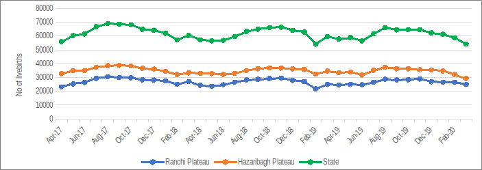<figcaption>Figure 1. Seasonality of births in Jharkhand between FY18-FY20 – Total and according to NSSO region</figcaption></figure></div>


<p class="has-small-font-size">Source: HMIS</p>


<p><strong>Factors that influence conception</strong></p>


<p>Child birth in Jharkhand seems to be influenced by agro-climatic factors. The peak in births between August to November corresponds to conception (by appropriate lagging) in the months of November to February while the notable dip in births in February correspond to the month of May and the later dips during May and June corresponds to the months of August abd September which is also the kharif farming season. Kharif crops like maize are sown between May-June and rice between June -August [7]. Jharkhand is also divided into 3 agro-climatic regions i.e., Central and North-eastern Plateau (Region-I), Western Plateau (Region-II) and South-eastern Plateau (Region-III) (Figure 2). As seen in Fig 3, all three regions also follow a pattern of birth peak August to November and dip in February-March. It was observed however, that 3 of the 7 districts that largely witnessed a higher rate of births in the month of August belonged to the western plateau of Jharkhand.</p>


<div class="wp-block-image">
<figure class="aligncenter size-full is-resized">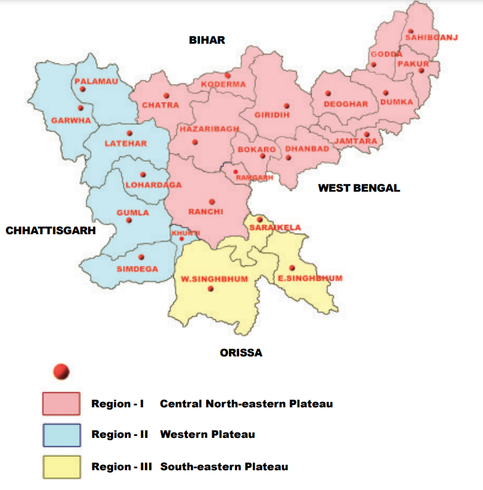<figcaption>Figure 2: District wise map according to agro-climatic regions in Jharkhand [8]</figcaption></figure></div>


<p class="has-small-font-size">Source: BAU (n.d.)</p>


<p>A peak in August favors conception in the plateau where kharif crops (maize, groundnut, pulses) are harvested between August to October followed by rabi crops sown in October (pulses, oilseeds). These patterns have been corroborated in the extant literature. Studies have found temperatures to be associated with the conceptions where chances of conception were high during the pleasanter winter period and lowest during summer months with high temperatures. However, in rural areas, the tiring work done in farms appear to also be an important factor that influences conception [4-5]. The months of lowest conception correspond to period where rabi crops are harvested, period where farmers undertake land preparation post pre-monsoon showers, sowing and harvesting of key kharif crops [7, 8].</p>


<div class="wp-block-image">
<figure class="aligncenter size-full">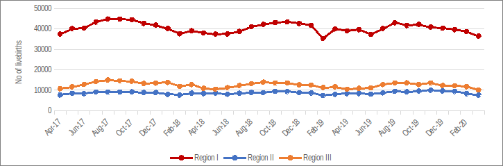<figcaption>Figure 3. Seasonality of births in Jharkhand between FY18-FY20 according to agro-climatic region</figcaption></figure></div>


<p class="has-small-font-size">Source: HMIS</p>


<p>In urban areas, births were erratic. It must be noted still that districts that comprise 94% of urban births (Purbhi Singhbhum, Dhanbad and Bokaro) are also industrially developed districts, and utilization and reliance on health facilities by temporary migrants and neighboring districts are expected.</p>


<div class="wp-block-image">
<figure class="aligncenter size-large is-resized">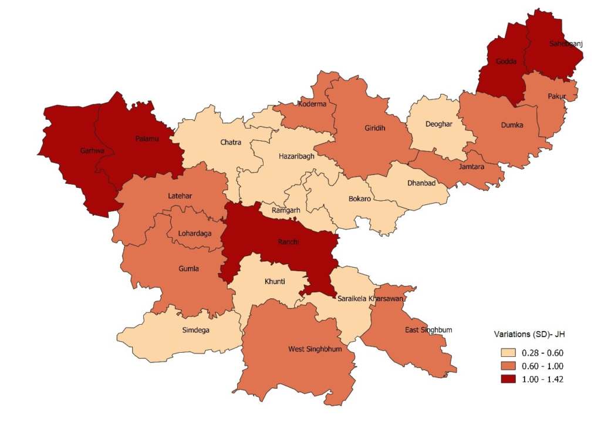<figcaption>Figure 4: Map for SD variation in births from April 2017-March 2020 in Jharkhand</figcaption></figure></div>


<p class="has-small-font-size">Source: HMIS</p>


<p>The contour map of the standard deviation based low (&lt;0.6SD), moderate (0.6-1SD) high (1-1.4 SD, and seasonal variations in births is provided in Figure 4. The map shows that for most districts, the variation was low to moderate. This was evident given that several districts did not demonstrate very clear or consistent peaks in births during the 36-month period. However, 5 of the 7 districts in Western plateau (agro-climatic region II) had either a moderate or high standard deviation. Several (7 of 10) districts with a high Scheduled Tribes population (&gt;35%) had a moderate or high standard deviation [9]. At state level, the variation was low (0.53 SD).</p>


<p>Gap in coverage of Immunization at birth: Seasonality in births has implications for family planning services as well as the logistics for child vaccination. We examine the patters of birth dosage as reported in the HMIS.</p>


<p>Fig 5 compares month-wise data of births and coverage of birth doses of 4 vaccines for FY18-FY20 period. It is observed that the variations in the birth doses largely follow the variations in the birth patterns with a high peak during August to November and a decline thereafter with significant dip usually around February-March.</p>


<p>In terms of coverage of birth doses, the largest gap existed for vitamin K1 dose and Hepatitis B &#8211; birth doses. Even the gap between number of births and Oral poliovirus vaccines (OPV) was high. The numbers of Bacille Calmette-Guerin (BCG) exceeded that of children born through FY18-FY20 indicating significant over-reporting.</p>


<div class="wp-block-image">
<figure class="aligncenter size-full">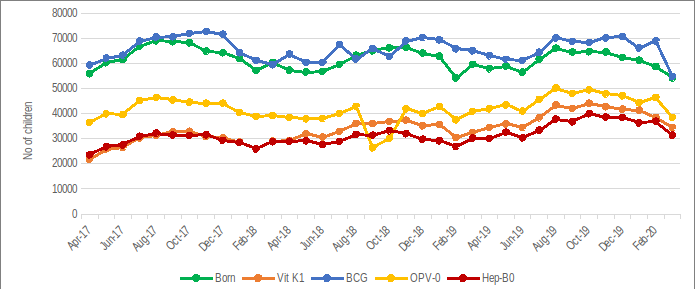<figcaption>Figure 5. Comparison of birth seasonality and coverage of vaccination at birth</figcaption></figure></div>


<p class="has-small-font-size">Source: HMIS</p>


<p><strong>Key Takeaways &amp; Policy Implications</strong></p>


<p>Birth patterns appear to be influenced by agro-climatic factors.<br>The patterns of birth seasonality have critical implications on health system and policy. Family planning programs could develop strategies for improving their reach to meet unmet contraception needs of women in the state during the key conception months. It must be noted that Jharkhand has a high tribal population and their unmet needs for family planning is higher than other social groups.</p>


<p>From a public health perspective, an understanding of birth seasonality patterns can be useful in planning obstetric health care. Jharkhand is a state where few districts of Jharkhand have a high rate of preterm births per 1000 live births hence identifying months of birth peak is critical [10]. Most districts of Jharkhand have a very high-rate anemia among pregnant women and anemia in pregnancy has been strongly associated with preterm births in Jharkhand [11-12]. In some studies [13], high preterm prevalence has been observed in the post-monsoon months (September to November) which is the same period with high rates of childbirth in the state identified in this analysis. Identification of months of high or low births can help local health system to improve delivery of maternal health services.</p>


<p>In Jharkhand, important vaccines like Hepatitis B and oral polio have very low coverage for their birth doses. Further, guidelines to administer vitamin K1 at birth are also not being followed. The gaps in Vitamin K1 have been largely attributed to insufficient supply and poor awareness of health workers [14]. While government guidelines mandates administration of injection Vitamin K Prophylaxis at birth, the national immunization schedule has not included the vaccine which indicates needs for sensitization of health care workers [15-16]. With information of birth seasonality, local health facilities can effectively plan to ensure there is adequate stock of vaccines during the peak months.</p>


<p><strong>References</strong></p>


<ol class="wp-block-list"><li>Cancho-Candela, R., Andrés-de Llano, J. M., &amp; Ardura-Fernandez, J. (2007). Decline and loss of birth seasonality in Spain: analysis of 33 421 731 births over 60 years. Journal of Epidemiology &amp; Community Health, 61(8), 713-718.</li><li>Ferguson, A. G. (1987). Some aspects of birth seasonality in Kenya. Social Science &amp; Medicine, 25(7), 793-801.</li><li>Nambiar, A., Chowdhury, D., &amp; Agnihotri, S. B. (2022). Seasonal Variations in Childbirth A Perspective from the HMIS Database (2017–20). Economic &amp; Political Weekly, 7(17).</li><li>Bernard, R. P., Bhatt, R. V., Potts, D. M., &amp; Rao, A. P. (1978). Seasonality of birth in India. Journal of Biosocial Science, 10(4), 409-421.</li><li>Ogum, G. E. O., &amp; Okorafor, A. E. (1979). Seasonality of births in south-eastern Nigeria. Journal of Biosocial Science, 11(2), 209-217.</li><li>Anand, K., Kumar, G., Kant, S., &amp; Kapoor, S. K. (2000). Seasonality of births and possible factors influencing it in a rural area of Haryana, India. Indian pediatrics, 37(3), 306-311.</li><li>Government of India. (2018). New Crop Calendar. Pradhan Mantri Fasal Bima Yojana. Ministry of Agriculture and Farmers Welfare. Retrieved from https://pmfby.gov.in/pdf/New_Crop_Calendar_20.09.18.pdf</li><li>BAU. (n.d.) Agricultural Technology Modules for Jharkhand. Directorate of Extension Education Birsa Agricultural University (BAU). Retrieved from: http://bau-eagriculture.com/submit/download/publication/publication1.pdf</li><li>Government of India. (2011). Jharkhand district wise map-Percentage ST population. Census 2011. Retrieved from: https://www.censusgis.org/india/</li><li>Shaw, S., Chaudhuri, S., &amp; Agnihotri, S. (2021). Policy Brief: Preterm delivery patterns in Jharkhand as revealed by HMIS data 2017-18 to 2019-20. Nutrition Group-IIT Bombay. Retrieved from: ../policybrief-jharkhand/ &nbsp;</li><li>MoHFW. (n.d.). Anaemia in pregnant women, Jharkhand, NFHS5 2019-2021. Pregnancy-Manifestation in Jharkhand. HealthNutritionINDIA. Retrieved from: https://healthnutritionindia.in/dashboard/3/1/239</li><li>Kumari, S., Garg, N., Kumar, A., Guru, P. K. I., Ansari, S., Anwar, S., … &amp; Sohail, M. (2019). Maternal and severe anaemia in delivering women is associated with risk of preterm and low birth weight: A cross sectional study from Jharkhand, India. One Health, 8, 100098.</li><li>Hughes, M. M., Katz, J., Mullany, L. C., Khatry, S. K., LeClerq, S. C., Darmstadt, G. L., &amp; Tielsch, J. M. (2014). Seasonality of birth outcomes in rural Sarlahi District, Nepal: a population-based prospective cohort. BMC pregnancy and childbirth, 14(1), 1-9.</li><li>Bora, K. (2021). Gaps in the coverage of vitamin K1 prophylaxis among newborns in India: insights from secondary analysis of data from the Health Management Information System. Public Health Nutrition, 24(17), 5589-5597.</li><li>MOHFW. (2018). National Immunization Schedule. National Health Mission.Retrieved from https://nhm.gov.in/New_Updates_2018/NHM_Components/Immunization/report/National_%20Immunization_Schedule.pdf</li><li>Government of India. (2014). Operational Guidelines. Injection of Vitamin K Prophylaxis at Birth (In Facilities). Ministry of Health &amp; Family Welfare . Retrieved from https://nhm.gov.in/images/pdf/programmes/child-health/guidelines/Vitamin_K_Operational_Guidelines.pdf</li></ol>


<p><strong>Authors</strong></p>


<p><strong>Marian Abraham</strong> is a Senior Research Analyst at the Koita Centre For Digital Health, IIT Bombay.</p>


<p><strong>Krritika R Patel</strong> has completed her M.Tech in Technology and Development at CTARA, IIT Bombay.</p>


<p><strong>Prof Satish B Agnihotri</strong> is an Emeritus Fellow CTARA at IIT Bombay.</p>


<p><strong>Prof. Sarthak Gaurav</strong> is an Associate Professor at Shailesh J. Mehta School of Management, IIT Bombay.</p>


<div style="height:33px" aria-hidden="true" class="wp-block-spacer"></div>


<p><em><strong>Suggested Citation:</strong> Abraham, M., Patel, K., Agnihotri, S. B., &amp; Gaurav, S. (2024). Is there a seasonal pattern to births in Jharkhand? Nutrition Group, IIT Bombay.<br></em> </p>
]]></content:encoded>
					
					<wfw:commentRss>../pb-no-20/feed/</wfw:commentRss>
			<slash:comments>0</slash:comments>
		
		
		<post-id xmlns="com-wordpress:feed-additions:1">2068</post-id>	</item>
		<item>
		<title>PB No. 19 Preterm delivery patterns in Maharashtra as revealed by HMIS data: 2017-18 to 2019-20</title>
		<link>../pb_no_19/</link>
					<comments>../pb_no_19/#respond</comments>
		
		<dc:creator><![CDATA[Nutrition Group]]></dc:creator>
		<pubDate>Sat, 08 Jun 2024 07:00:58 +0000</pubDate>
				<category><![CDATA[Policy Briefs]]></category>
		<category><![CDATA[HMIS]]></category>
		<category><![CDATA[iitbnutritiongroup]]></category>
		<category><![CDATA[Maharashtra]]></category>
		<category><![CDATA[policy]]></category>
		<category><![CDATA[preterm births]]></category>
		<guid isPermaLink="false">../?p=2005</guid>

					<description><![CDATA[This brief analyzes preterm birth data from Maharashtra's HMIS for 2017-18 to 2019-20, highlighting its importance for maternal health and child malnutrition management. The study identifies high incidence in tribal districts such as Gadchiroli and Nandurbar but also notes high incidence in Brihan Mumbai, emphasizing the need for targeted interventions.]]></description>
										<content:encoded><![CDATA[
<p><strong>Abstract</strong></p>


<p>This brief analyses data on preterm births in Maharashtra as available from the HMIS (Health Management Information System) for the three pre-pandemic years— 2017-18 to 2019-20. These data are important, both as surrogate for maternal health as well as early warning system for handling the burden of child malnutrition. The study examines the consistency of the data, the incidence of preterm births, and the presence of regional clusters. While the top five districts in terms of incidence of preterm births are Gadchiroli, Nandurbar, Chandrapur, Amravati, and Brihan Mumbai warrant attention, districts like Thane and Pune also stand out districts having the highest absolute number of preterm births. Sub-districts with a particularly high burden of preterm births have also been identified. In particular, tribal districts like Nandurbar, Gadchiroli and Dhule, many of which have a high incidence of preterm births, call for a special focus.</p>


<p><strong>Introduction</strong></p>


<p> Preterm birth (premature birth) is a significant public health problem across the world because of associated neonatal (first 28 days of life) mortality. It is also a major cause of a child’s short- and long-term morbidity and disability in later life (Morniroli et al., 2023). Preterm is defined by World Health Organization (WHO) as babies born alive before 37 completed weeks of gestation or fewer than 259 days of gestation since the first day of a woman’s last menstrual period ). Normally, a pregnancy lasts about 40 weeks. The past decade has witnessed only a marginal reduction in the number of preterm births globally (WHO, 2023). According to WHO, every year about 15 million babies are born prematurely around the world; more than one in ten babies are born globally (Kinney et al., 2012). In India, which has the highest burden of preterm births in the world, out of 27 million babies born every year (2010 data), 3.5 million babies born are premature (Blencowe et al., 2012). Complications of preterm birth were the leading cause of death in children younger than five years of age globally in 2018, accounting for approximately 16% of all deaths, and 35% of deaths among new-born babies. Newborn deaths (those in the first month of life) themselves accounted for nearly half all deaths in children under five years of age in 2018 (UN IGME, 2019). Survival of premature babies also depends on where they are born. Over 9 in 10 extremely preterm babies survive in high-income countries because of enhanced basic care and parental awareness, in sharp contrast to only 1 in 10 extremely preterm babies in low-income countries (WHO, 2023).</p>


<p>Many studies have pointed out that malnutrition during childhood is actually a continuation of malnutrition at birth. Prematurity and intrauterine growth restrictions (IUGR) are the two underlying biological factors leading to LBW. Even despite catch‐up growth, a large proportion of low birthweight (LBW) infants fail to attain the expected weight and height during infancy. Compared with infants born with normal weight, LBW infants are also more prone to post‐natal growth faltering (weight or height &lt;−2 SD of reference). Preterm and growth‐restricted infants are vulnerable to infections, and infection in turn leads to growth faltering, thereby creating a vicious circle of infection and undernutrition (Sania, et al., 2015).</p>


<p>Maharashtra has seen an increase in the incidence of severe wasting between the latest two rounds of NFHS: NFHS-4 and NFHS-5, even though there has been some decrease in the incidence of wasting (<a href="https://www.youtube.com/watch?v=0yOhuptGOJo">https://www.youtube.com/watch?v=0yOhuptGOJo</a> Maharashtra Analysis NFHS4 and NFHS5 &#8211; Towards a Kuposhan Mukt Bharat ). Since preterm birth significantly impacts the nutritional status of a child apart from health and prospects of survival, it is important to investigate the burden of preterm births and adopt measures to reduce it. This study investigates the HMIS data of Maharashtra for three financial years from 2017-18 to 2019-20 to understand the trends and patterns of preterm births in the state.</p>


<p><strong>Methodology</strong></p>


<p>The Health Management Information System (HMIS) was established under the National Rural Health Mission (NRHM), a flagship healthcare program under the Ministry of Health and Family Welfare (MoHFW). The policy brief uses data from HMIS that was previously available in the public domain for all states from April 2017-18 to March 2019-20 (over three financial years); at district and sub-district levels as well (MOHFW, n.d.). For this brief, we rely on data on preterm birth, live births (male), live births (female), and number of preterm children born over the period 2017-18 to 2019-20. Table 1 summarizes the parameters and indicators used in this analysis:</p>


<figure class="wp-block-table"><table><tbody><tr><td><strong>Parameter/Indicator</strong></td><td><strong>Definition</strong></td><td><strong>Numerator</strong></td><td><strong>Denominator</strong></td></tr><tr><td>Children Born</td><td>Number of live births (male + female)</td><td></td><td></td></tr><tr><td>Preterm Births</td><td>Number of preterm newborns ( &lt; 37 weeks of pregnancy)</td><td></td><td></td></tr><tr><td>Preterm Birth Rate (or Incidence)</td><td>Number of preterm newborns per 1000 children born</td><td>Preterm Births*1000</td><td>Children Born</td></tr></tbody></table><figcaption><em>Table 1: Summary of parameters and/or indicator used in the analysis</em></figcaption></figure>


<p>Literature suggests that HMIS data might suffer from data duplication or data inconsistency due to misinterpretation of data elements and other systemic issues (Kumar, 2018). However, parameters related to number of children born, casualty and preterm deliveries are consistent and have less chances of human error. The reported preterm birth data would provide at least the lower bound of incidence and the numbers can further go up if unreported preterm births are added. The analysis that follows must be viewed in this light. Nevertheless, it can still provide a meaningful input for policy, implementation, and research.</p>


<p><strong>Results</strong></p>


<p>Number of preterm births and incidence (preterm births per 1000 children born) of preterm births have been shown in Table 2 for the districts of Maharashtra. Focus on incidence is required because it gives a clear idea of the regions which are having higher proportion of preterm births. The districts Gadchiroli, Nandurbar, Chandrapur, Amravati, Brihan Mumbai, Aurangabad and Pune have shown higher total number as well as incidence for all the three financial years, whereas Osmanabad, Yavatmal and Kolhapur has shown lower number and incidence. Sindhudurg has low numbers but high incidence. From the table, it is evident that the range of the number of preterm births have increased but the range for incidence has decreased over these three years.</p>


<div class="wp-block-image">
<figure class="aligncenter size-full">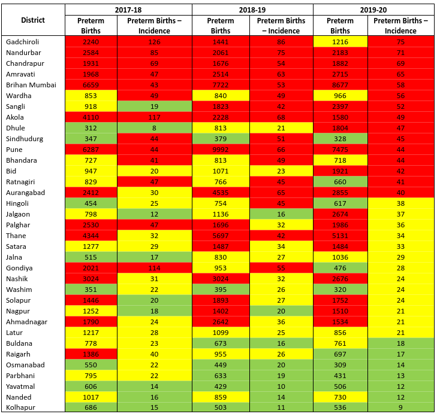<figcaption><em>Table 2: District-wise preterm births and incidence in Maharashtra (2017-20)</em></figcaption></figure></div>


<p class="has-small-font-size">Note: Years refer to corresponding financial years.&nbsp;<br>Source: MOHFW (n.d.)</p>


<p>To check the consistency of the data between different years, the birth data as well as the data on preterm births for 2018-19 and 2019-20 have been regressed on the 2017-18 data (Figure 1 and 2). Data are fairly consistent as seen from the linear fit which was obtained after regression. Few outliers are apparent (Figure 2), contributed by the data from the districts of Nandurbar, Solapur, Nashik ,and Brihan Mumbai.</p>


<div class="wp-block-columns is-layout-flex wp-container-core-columns-is-layout-1 wp-block-columns-is-layout-flex">
<div class="wp-block-column is-layout-flow wp-block-column-is-layout-flow"><div class="wp-block-image">
<figure class="aligncenter size-full is-resized">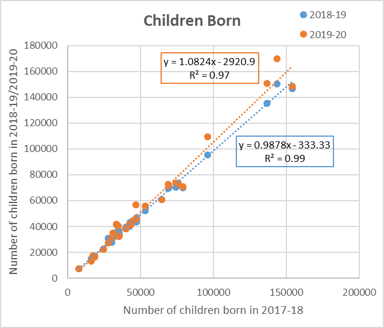<figcaption><em>Figure 1: Scatter plot for children born</em></figcaption></figure></div></div>


<div class="wp-block-column is-layout-flow wp-block-column-is-layout-flow"><div class="wp-block-image">
<figure class="aligncenter size-full is-resized">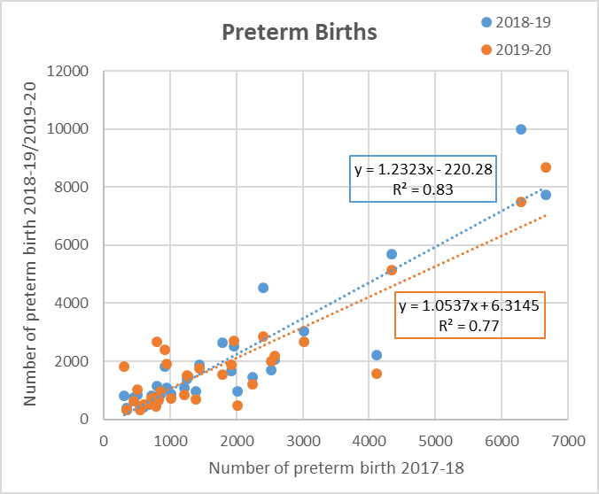<figcaption>Source: MOHFW (n.d.)<em>Figure 2: Scatter plot for preterm</em></figcaption></figure></div></div>
</div>


<p class="has-small-font-size">Source: MOHFW (n.d.)</p>


<p>To find out if any district is disproportionately contributing to the total preterm births in the state, the relative contribution of different districts to children born as well as preterm births reported for the three-year period have been analysed using pie-charts as shown in Figure 3 and 4.</p>


<div class="wp-block-columns is-layout-flex wp-container-core-columns-is-layout-2 wp-block-columns-is-layout-flex">
<div class="wp-block-column is-layout-flow wp-block-column-is-layout-flow"><div class="wp-block-image">
<figure class="aligncenter size-full is-resized">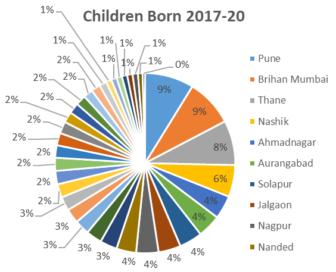<figcaption><em>Figure 3: Distribution of children born in Maharashtra from 2017-20</em></figcaption></figure></div></div>


<div class="wp-block-column is-layout-flow wp-block-column-is-layout-flow"><div class="wp-block-image">
<figure class="aligncenter size-full is-resized">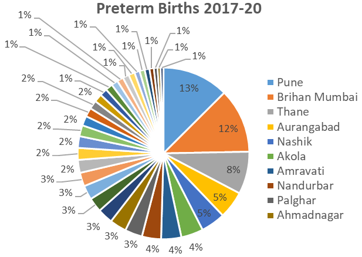<figcaption><em>Figure 4: Distribution of preterm births in Maharashtra form 2017-2</em></figcaption></figure></div></div>
</div>


<p class="has-small-font-size">Source: MOHFW (n.d.)</p>


<p>From the above figures, it can be observed that the economically well-off districts of Pune, Brihan Mumbai, Thane, and Nashik have contributed to higher number of children born as well as preterm births. Interestingly, the districts Akola, Amravati, Nandurbar and Palghar have contributed to preterm births disproportionately compared to the number of children born.</p>


<p>It is instructive to see if the districts with high and low incidence of preterm births form any clusters. In case of preterm birth rate (2019-20), a belt of red colour in the eastern part of Maharashtra can be observed (Figure 5). In addition to this, two districts in the northern part and two districts in the southern coast are contributing towards the high incidence. Central Maharashtra seem to be in the mid-range whilst small patches of green depicting low burden districts can be seen.</p>


<div class="wp-block-image">
<figure class="aligncenter size-full is-resized">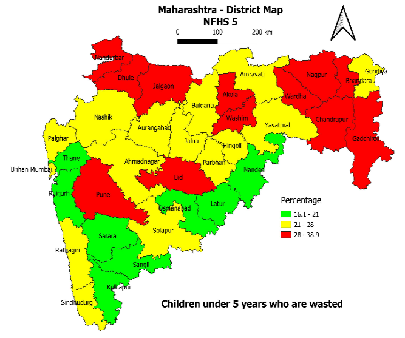<figcaption><em>Figure 5: Choropleth map of Preterm Birth Rate (or Incidence) as per HMIS 2019-20</em></figcaption></figure></div>


<p class="has-small-font-size">Sources: MOHFW (n.d.); IIPS (2020)</p>


<p>Figure 6 shows the map for severely wasted children in Maharashtra as per NFHS-5. On comparing both the figures, it is interesting to note that these overlap suggesting that districts with higher incidence of preterm births also show higher percentage of severely wasted children. However, the maps do not completely coincide as there are few exceptions as shown below.</p>


<div class="wp-block-image">
<figure class="aligncenter size-full is-resized">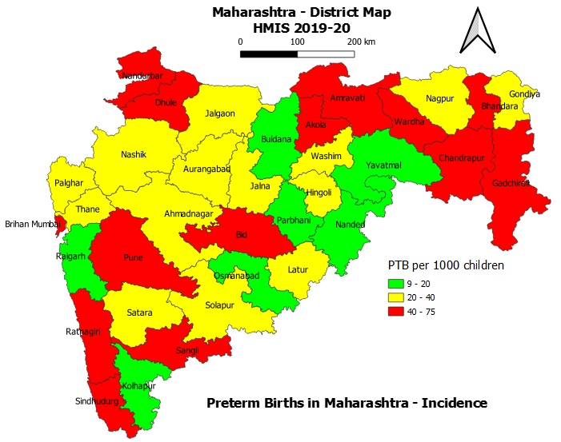<figcaption>F<em>igure 6: Choropleth map of Severely Wasted Children (NFHS-5)</em></figcaption></figure></div>


<p class="has-small-font-size">Sources: MOHFW (n.d.); IIPS (2020)</p>


<p>Since severe wasting and incidence of preterm births are seen to generally overlap, it was expected that district would also show similar behaviour for percentage of children under five years who are wasted as per NFHS-5. Spatial map for wasted children is shown in Figure 7. Interestingly, some of the districts which show higher percentage of children who are wasted also belong to districts with higher incidence of preterm birth rate.</p>


<div class="wp-block-image">
<figure class="aligncenter size-full is-resized">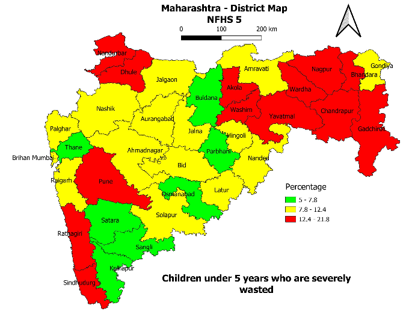<figcaption><em>Figure 7: Choropleth map of Wasted Children (NFHS-5)</em></figcaption></figure></div>


<p class="has-small-font-size">Sources: MOHFW (n.d.); IIPS (2020)</p>


<p>Table 3 shows the preterm birth rates of the 15 highest burden sub-districts of Maharashtra for the year 2019-20. Most of these sub-districts belong to high burden districts such as Gadchiroli, Amravati, Brihan Mumbai, Bid and Wardha. Interestingly, the sub-district of Gagan Bawada belongs to Kolhapur which is a low burden district. Areas that report an incidence of 100 and more, and especially those that cross the unusually high mark of 200, need closer scrutiny at the Primary Health Centre (PHC) level.</p>


<div class="wp-block-image">
<figure class="aligncenter size-full is-resized">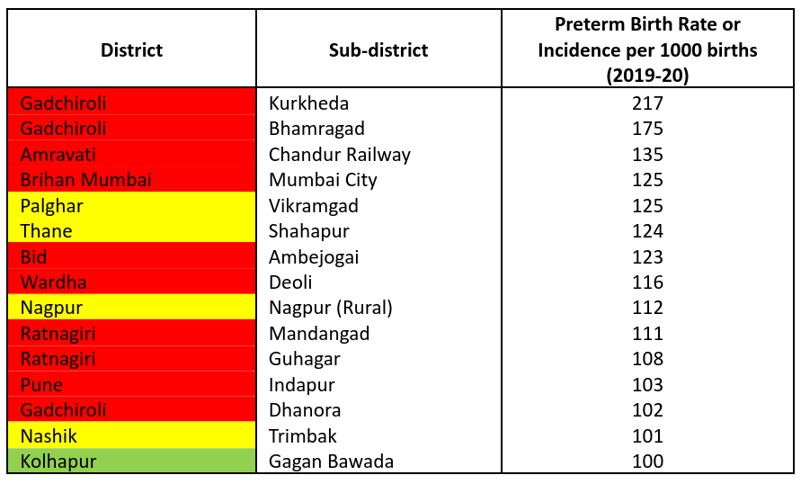<figcaption><em>Table 3: Top 15 highest burden sub-districts of Maharashtra</em></figcaption></figure></div>


<p class="has-small-font-size">Source: MOHFW (n.d.)</p>


<p><strong>Conclusion</strong></p>


<p>There are 15 districts in Maharashtra which have more than 40 preterm births per 1000 children born. Gadchiroli, Nandurbar, Chandrapur, Amravati and Brihan Mumbai are the top 5 districts having highest burden out of the 15 high burden districts for the year 2019-20. These five districts have been consistent in showing high preterm births as well as incidence for all the three years. It was also seen that the most of the districts contributing to high incidence also show higher percentages of severely wasted children below 5 years of age. The high incidence of preterm births and severe wasting among children, Nandurbar (69.3%), Gadchiroli (38.7%) and Dhule (31.6%) are predominantly tribal districts as per Census 2011.</p>


<p>At the sub-district level, Kurkheda and Bhamragad of Gadchiroli have highest preterm birth rates of 217 and 175 respectively. In Brihan Mumbai, sub-district Mumbai City has a high incidence of 125. In terms of number, Pune district reports the highest preterm births which is more than 6000 preterm births every year in the duration from April 2017 to March 2020. Thane is amongst the high incidence district but it has shown reduction of 10 points in the rates of preterm birth from 2018-19 to 2019-20. Raigarh, Osmanabad, Parbhani, Yavatmal and Kolhapur are the five districts which show low total numbers as well as incidence of preterm birth for the year 2019-20.</p>


<p>This policy brief, which describes the available statistics and identifies high burden zones, may help identify specific target areas in these zones. This evidence can be used for more efficient allocation of resources, engagement in learning from the approaches of low burden areas and accentuates the ongoing concerns of maternal and child health in tribal districts. As mentioned earlier, since preterm birth and early childhood nutrition challenges are highly correlated, tackling the issue of preterm births may be the necessary first step towards achieving better childhood nutrition outcomes in the state.</p>


<p><strong>References</strong></p>


<p>Blencowe, H., Cousens, S., Oestergaard, M. Z., Chou, D., Moller, A. B., Narwal, R., &#8230; &amp; Lawn, J. E. (2012). National, regional, and worldwide estimates of preterm birth rates in the year 2010 with time trends since 1990 for selected countries: a systematic analysis and implications. <em>The Lancet</em>, 379(9832), 2162-2172.</p>


<p>IIPS. (2020). <em>National Family Health Survey (NFHS-5).</em> Mumbai: International Institute for Population Sciences. Retrieved from NFHS: <a href="http://rchiips.org/nfhs/about.shtml">http://rchiips.org/nfhs/about.shtml</a></p>


<p>Kinney, M. V., Lawn, J. E., Howson, C. P., &amp; Belizan, J. (2012). 15 Million preterm births annually: what has changed this year?.&nbsp;<em>Reproductive health</em>,&nbsp;<em>9</em>(1), 1-4.</p>


<p>Kumar, R. K. (2018). Quality Issues in the Health Management Information System &#8211; A Case Study of Bihar. <em>Economic &amp; Political Weekl</em>y</p>


<p>Ministry of Health and Family Welfare. (n.d.). <em>Health Management Information System</em>. Retrieved from https://hmis.mohfw.gov.in/#!/</p>


<p>Morniroli, D., Tiraferri, V., Maiocco, G., De Rose, D. U., Cresi, F., Coscia, A., &#8230; &amp; Giannì, M. L. (2023). Beyond survival: the lasting effects of premature birth. Frontiers in Pediatrics, 11.</p>


<p>Sania, A., Spiegelman, D., Edwards, J. R., Hertzmark, E., Mwiru, R. S., Kisenge, R., &amp; Fawzi, W. W. (2015, October). The contribution of preterm birth and intrauterine growth restriction to childhood undernutrition in Tanzania. <em>Maternal &amp; Child Nutrition</em>, pp. 618-630</p>


<p>United Nations Inter-agency Group for Child Mortality Estimation. (2019). <em>Levels &amp; Trends in Child Mortality: Report 2019.</em> New York: United Nations Inter-agency Group for Child Mortality Estimation (UN IGME).</p>


<p>World Health Organization. (2023). Born too soon: decade of action on preterm birth. <em>World Health Organization</em>. Retrieved from https://data.unicef.org/resources/born-too-soon-decade-of-action-on-preterm-birth/</p>


<p><strong>Authors</strong></p>


<p><strong>Danyal Bin Islam, Dr. Sambuddha Chaudhuri, Prof. Satish B Agnihotri &amp; Prof. Sarthak Gaurav</strong></p>


<p><strong>Danyal Bin Islam</strong> did his Masters in Technology and Development in CTARA IIT Bombay and also worked as CTARA Nutrition Fellow with Fellowship support from the UNICEF.</p>


<p><strong>Dr. Sambuddha Chaudhuri, </strong>currently Associate Professor and Assistant Dean Outreach Jindal School of Public Health and Human Development andwas Post-Doctoral Fellow at the Centre for Policy Studies, IIT Bombay and works in the field of Public Health Policy.&nbsp;</p>


<p><strong>Prof. Satish B. Agnihotri</strong> is an Emeritus Professor at CTARA, IIT Bombay. Formerly a career bureaucrat, he worked for Government of India and State Government of Odisha under several capacities.</p>


<p><strong>Prof. Sarthak Gaurav</strong> is an Associate Professor at Shailesh J. Mehta School of Management, IIT Bombay.</p>


<div style="height:51px" aria-hidden="true" class="wp-block-spacer"></div>


<p><em><strong>Suggested citation:</strong> Bin Islam, D., Chaudhuri, S., Agnihotri, S. B., &amp; Gaurav, S. (2024). Preterm delivery patterns in Maharashtra as revealed by HMIS data: 2017-18 to 2019-20. Nutrition Group, IIT Bombay.</em></p>
]]></content:encoded>
					
					<wfw:commentRss>../pb_no_19/feed/</wfw:commentRss>
			<slash:comments>0</slash:comments>
		
		
		<post-id xmlns="com-wordpress:feed-additions:1">2005</post-id>	</item>
		<item>
		<title>PB No. 18  An analysis of the seasonal variations in births in Bihar: HMIS data 2017-20</title>
		<link>../policy-brief-an-analysis-of-the-seasonal-variations-in-births-in-bihar-hmis-data-2017-20/</link>
					<comments>../policy-brief-an-analysis-of-the-seasonal-variations-in-births-in-bihar-hmis-data-2017-20/#respond</comments>
		
		<dc:creator><![CDATA[Nutrition Group]]></dc:creator>
		<pubDate>Tue, 28 May 2024 05:07:26 +0000</pubDate>
				<category><![CDATA[Policy Briefs]]></category>
		<category><![CDATA[Bihar]]></category>
		<category><![CDATA[Birth seasonality]]></category>
		<category><![CDATA[HMIS]]></category>
		<category><![CDATA[iitbnutritiongroup]]></category>
		<category><![CDATA[policy]]></category>
		<guid isPermaLink="false">../?p=1993</guid>

					<description><![CDATA[This policy brief analyzes birth seasonality in Bihar from 2017 to 2020, highlighting peaks in August-October. Influences include agro-climatic conditions and cultural factors. Significant gaps in birth-dose vaccination coverage, particularly for Hepatitis B and Vitamin K1, were identified, emphasizing the need for improved health service planning and family planning strategies.]]></description>
										<content:encoded><![CDATA[
<p><strong>Introduction</strong></p>


<p>Human births are said to follow a seasonal pattern where there are specific periods during which more than average births occur [1]. Birth seasonality is largely a consequence of seasonality in conceptions that have occurred about 9 months earlier. But seasonal variation in live births (or, with appropriate lag, conception) is a multifactor phenomenon [2]. Most studies have documented the importance of environmental and social factors [3-4]. Birth patterns may also vary according to geography. Conception, followed by childbirth is governed by different factors in urban and rural areas. In rural areas, variation of births may be characterized by periods of key agricultural operations and monsoon whereas in urban areas, changes in weather could play an important role [5-6]. Examination of these patterns is important as regular seasonality in births has policy implications. The objective of this policy brief is to examine patterns of birth seasonality in the state of Bihar, and thereby conception and also to examine the role of agro-climatic conditions if any. In addition, the brief also examines gaps in coverage of key vaccines at birth i.e. the birth doses by comparing birth and vaccination coverage data.</p>


<p>We examine birth seasonality and immunization in Bihar – the state having the highest birth and fertility rate in the country – using month-wise data retrieved from the Health Management Information System (HMIS).</p>


<p>The HMIS was established under the National Rural Health Mission (NRHM), a flagship healthcare program under the Ministry of Health and Family Welfare (MoHFW). The policy brief analyzed data between April 2017 to March 2020: a period prior to the onset of the COVID-19 pandemic.</p>


<p>While there are issues with the quality of HMIS data, few sources other than HMIS provide granular-level child birth data. Also, the reporting of live births is fairly robust, at least to the extent of revealing seasonal patterns in births [5].</p>


<p>Even though the policy brief explores the seasonality of births at the state level, patterns below the state level have also been examined. The district-wise extent of variations in births have been examined by calculating and mapping the standard deviations for each district.</p>


<p><strong>Is there a seasonality in births?</strong></p>


<p>The seasonality patterns for the state and districts of Bihar were analyzed between FY 2017-18 to FY 2019-20. It was observed that there is a consistent pattern of seasonality in births in the state. Births peak in the months of August–October and thereafter there is a dip that prolongs from November till June with a sharp peak again in August. Moreover, the regularity in birth peaks is observed in both the urban and rural areas (Fig 1).</p>


<p>&nbsp;&nbsp;</p>


<div class="wp-block-image">
<figure class="aligncenter size-full">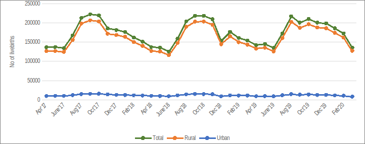<figcaption>Figure 1. Seasonality of births in Bihar between FY 2017-18 to FY 2019-20: Total and Region-wise</figcaption></figure></div>


<p class="has-small-font-size">Source: HMIS</p>


<p><strong>Do agro-climatic factors influence conception ?</strong></p>


<p>Childbirth in Bihar appears to be influenced by monsoon and timing of major agricultural operations. The distinct birth peak in August-October corresponds to conception during the months of November-January and the notable dip in births between April- June corresponds to the previous year’s Kharif season between July-September. Paddy is one of the major crops in Bihar and is largely harvested during October-November. The period following harvesting of this crop appears favorable for conception (December). It also broadly coincides with the main wedding season of October to December for the Hindu marriages in particular. This has an implication on the family planning campaign timings in the state.</p>


<div class="wp-block-image">
<figure class="aligncenter size-full">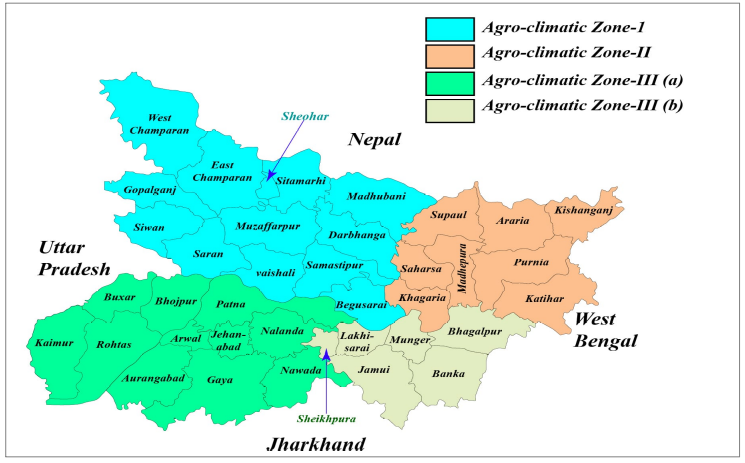<figcaption>Figure 2: District-wise map according to agro-climatic zones in Bihar [7]</figcaption></figure></div>


<p class="has-small-font-size">Source: BAMETI</p>


<p>Bihar has been classified into four agro-climatic zones based on soil quality and climatic conditions and there were few differences in seasonality (Figure 2). These regions are characterized by alluvial soil hence crops such as rice, wheat, sugarcane, maize, jute and oilseeds are primarily cultivated on it [8]. Figure 3 shows the birth seasonality patterns for the four agro-climatic zones. The HMIS data, reveals that six of eight districts that witnessed a peak in births in the month of August belonged to agro-climatic Zone 1. Most districts in Zone II (seven out of eight) reported a peak in the month of October. A single birth peak in October in Zone II districts suggests that conception was favorable in the period following the sowing of rabi crops between October-December (e.g., wheat, sunflower, maize) and preceding the period during spring, i.e., March to May when kharif crop (jute) is sown.</p>


<div class="wp-block-image">
<figure class="aligncenter size-full is-resized">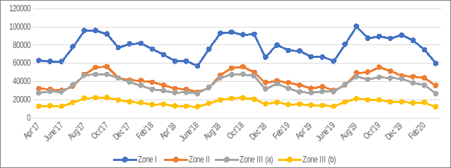<figcaption>Figure 3. Seasonality of births according to agro-climatic region</figcaption></figure></div>


<p class="has-small-font-size">Source: HMIS</p>


<p>Figure-4 provides the heat map of the standard deviation (SD) based on the moderate (1-1.5 SD), high (1.5-2), and very high (&gt; 2 SD) variations in births. The data shows that most districts in the state had a high to very high standard deviation. Eight districts in the north western alluvial plane Zone I have a moderate SD. This includes a cluster of five districts in Zone I that all have a moderate SD. Five of the eight districts are located on the banks of river Ganga. Three districts in Zone II (North-eastern alluvial plane) and five districts in the two sub zones of Zone III (South Alluvial Plane) had a very high SD.</p>


<div class="wp-block-image">
<figure class="aligncenter size-large is-resized">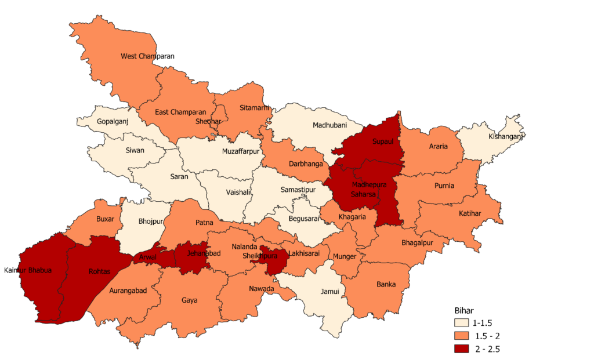<figcaption>Figure 4: Map for SD variation in births from April 2017-March 2020 in Bihar</figcaption></figure></div>


<p class="has-small-font-size">Source: HMIS</p>


<p>These patterns of conception are also corroborated in literature. Studies indicate that conception is usually the highest during the colder and dry winter months [2]. The similarity in urban-rural birth patterns is notable but some studies observe that climate is also a key factor that influences conception in urban areas [9]. The chances of conception are generally known to be the lowest especially in rural areas when households are engaged in strenuous farm activity of sowing field crops such as paddy which primarily occurs in Bihar between June-July and kharif harvesting which primarily occurs between September-October [6, 10]. Studies have also found that the frequency of conceptions may operate through the mechanism of food supply [4, 9]. The period following harvesting of important crops like paddy during December-January is also a period of abundance with a good availability of food and low necessity for exertion and could hence be favorable for conception from an economic point of view as well.</p>


<p><strong>Gap in coverage of Immunization at birth:</strong></p>


<p>Seasonality in births should logically reflect in the seasonality in birth-dose vaccination coverage. Figure-5 compares month-wise data of births and coverage of birth doses of 4 vaccines for FY 2017-18-FY 2019-20 period. It is observed that the variations in the coverage of the four vaccines follow the variations in birth with a peak during August-October, and a decline thereafter with significant dip between April-June.</p>


<div class="wp-block-image">
<figure class="aligncenter size-full is-resized">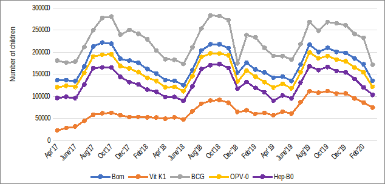<figcaption>Figure 5. Comparison of birth seasonality and coverage of vaccination at birth between FY 2017-18 to FY 2019-20</figcaption></figure></div>


<p class="has-small-font-size">Source: HMIS</p>


<p>In terms of coverage of birth doses, the largest gap existed for vitamin K1 dose and Hepatitis B &#8211; birth doses. The total number of Bacillus Calmette-Guérin (BCG) administered exceeded that of children born through the period of interest indicating significant over-reporting and double counting. The gap between number of births and oral poliovirus vaccine (OPV) was low. The data also indicated that the timelines of the birth doses of the four vaccines were important. The earlier the deadline to administer the vaccine, the higher the chances of missing the birth dose of the given vaccine. As per the immunization guidelines [11-12], the birth dose of BCG could be given to the infant latest by the first year of life whereas OPV could be administered within the first 15 days of life compared to vitamin K1 and Hepatitis B which should be given within 24 hours of birth.</p>


<p><strong>Key Takeaways and Policy Implications</strong></p>


<p>The study of birth seasonality in Bihar is important due to the implications these patterns have on the health service delivery. The identification of peak months of births will support local planning of maternal and child health services in a state like Bihar which has the highest birth and fertility rates in the country [13]. For instance, birth seasonality can help health care workers focused on improving obstetric care. It is important to also meet the unmet contraceptive needs of women in order to avoid unwanted conception during the peak conception months. The regularity of birth peaks in the months of August to October prescribe a need to improve dissemination of family planning messages and increase reach of contraception services in the months of December to February in Bihar. Scholars have observed that the sexual behaviour of people also has an effect on the variation of births [1]. A study in Bihar found that women with migrant husbands were about 50% less likely to use modern contraceptive methods [14]. Given that migration among males is common in Bihar, especially in rural areas [15], it is imperative that family planning programs in Bihar prepare migration specific implementation strategies.</p>


<p>Birth data can also help health systems to ensure adequate stock of birth vaccine doses (BCG, Vitamin K1, Hepatitis B and OPV) during birth peak months. The findings suggest poor coverage of Hepatitis B and Vitamin K1 birth doses. The gaps in Vitamin K1 have been largely attributed to insufficient supply and poor awareness of health workers [16]. While government guidelines mandates administration of Vitamin K1 prophylaxis at birth, the national immunization schedule has not included the vaccine which indicates a need for sensitization of health care workers [11-12]. Similarly, factors like poor stock management, incomplete recording and incomplete knowledge amongst health functionaries about vaccination schedule have resulted in the low uptake of hepatitis B birth dose. Studies have also observed fear of high vaccine wastage for Hepatitis-B birth dose where health care workers often refrained from opening a new 10 dose vial of the vaccine for a low number of deliveries [17]. While the Open Vial Policy has helped scale up Hepatitis B vaccination, there is significant need for more training of health care workers [18]. More analysis may be needed to further examine birth seasonality patterns and their implications in Bihar.</p>


<p><strong>References</strong></p>


<ol class="wp-block-list"><li>Tembon, A. C. (1990). Seasonality of births in the North West Province, Cameroon: implications for family planning programme. Central African Journal of Medicine, 36(4), 90-93.</li><li>Ogum, G. E. O., &amp; Okorafor, A. E. (1979). Seasonality of births in south-eastern Nigeria. Journal of Biosocial Science, 11(2), 209-217.</li><li>Cancho-Candela, R., Andrés-de Llano, J. M., &amp; Ardura-Fernandez, J. (2007). Decline and loss of birth seasonality in Spain: analysis of 33 421 731 births over 60 years. Journal of Epidemiology &amp; Community Health, 61(8), 713-718.</li><li>Ferguson, A. G. (1987). Some aspects of birth seasonality in Kenya. Social Science &amp; Medicine, 25(7), 793-801.</li><li>Nambiar, A., Chowdhury, D., &amp; Agnihotri, S. B. (2022). Seasonal Variations in Childbirth A Perspective from the HMIS Database (2017–20). Economic &amp; Political Weekly, 7(17).</li><li>Bernard, R. P., Bhatt, R. V., Potts, D. M., &amp; Rao, A. P. (1978). Seasonality of birth in India. Journal of Biosocial Science, 10(4), 409-421.</li><li>BAMETI. (n.d.). Status of Agriculture in Bihar. Retrieved from https://www.bameti.org/wp-content/uploads/2021/02/State-Profile.pdf</li><li>Dwevedi, A., Kumar, P., Kumar, P., Kumar, Y., Sharma, Y. K., &amp; Kayastha, A. M. (2017). Soil sensors: detailed insight into research updates, significance, and future prospects. In New pesticides and soil sensors (pp. 561-594). Academic Press.</li><li>Kosambi, D. D., &amp; Raghavachari, S. (1951). Seasonal variation in the Indian birth‐rate. Annals of eugenics, 16(1), 165-192.</li><li>Government of India. (2018). New Crop Calendar. Pradhan Mantri Fasal Bima Yojana. Ministry of Agriculture and Farmers Welfare. Retrieved from https://pmfby.gov.in/pdf/New_Crop_Calendar_20.09.18.pdf</li></ol>


<ol class="wp-block-list" start="11"><li>MOHFW. (2018). National Immunization Schedule. National Health Mission.Retrieved from https://nhm.gov.in/New_Updates_2018/NHM_Components/Immunization/report/National_%20Immunization_Schedule.pdf</li><li>Government of India. (2014). Operational Guidelines. Injection of Vitamin K Prophylaxis at Birth (In Facilities). Ministry of Health &amp; Family Welfare . Retrieved from https://nhm.gov.in/images/pdf/programmes/child-health/guidelines/Vitamin_K_Operational_Guidelines.pdf</li><li>Government of India. (2011). Population Projections for India And States 2011 – 2036, Census of India 2011. Report of the Technical Group on Population Projections. Retrieved from: https://nhm.gov.in/New_Updates_2018/Report_Population_Projection_2019.pdf</li><li>Mahapatra, B., Saggurti, N., Mishra, R., Walia, M., &amp; Mukherjee, S. (2020). Migration and family planning in the state with highest total fertility rate in India. BMC public health, 20(1), 1-9.</li><li>Keshri, K., &amp; Bhagat, R. B. (2010). Temporary and seasonal migration in India. Genus, 66(3), 25-45.</li><li>Bora, K. (2021). Gaps in the coverage of vitamin K1 prophylaxis among newborns in India: insights from secondary analysis of data from the Health Management Information System. Public Health Nutrition, 24(17), 5589-5597.</li><li>Lahariya, C., Subramanya, B. P., &amp; Sosler, S. (2013). An assessment of hepatitis B vaccine introduction in India: Lessons for roll out and scale up of new vaccines in immunization programs. Indian journal of public health, 57(1), 8.</li><li>UNICEF. (2021). A report on assessment of Open Vial Policy Implementation in India. National Cold Chain and Vaccine Management Resource Centre. Retrieved from https://www.unicef.org/india/reports/assessment-open-vial-policy-implementation-india</li></ol>


<p><strong>Authors</strong></p>


<p>Marian Abraham, Krritika R Patel, Prof. Satish B Agnihotri &amp; Prof. Sarthak Gaurav</p>


<p>Marian Abraham is a Senior Research Analyst at the Koita Centre For Digital Health, IIT Bombay.</p>


<p>Krritika R Patel has completed her M.Tech in Technology and Development at CTARA, IIT Bombay. </p>


<p>Prof Satish B Agnihotri is Emeritus Fellow CTARA at IIT Bombay and works, inter alia, on Child Malnutrition, Health and Nutrition Policy.</p>


<p>Prof. Sarthak Gaurav is an Associate Professor at Shailesh J. Mehta School of Management, IIT Bombay.</p>


<div style="height:30px" aria-hidden="true" class="wp-block-spacer"></div>


<p><em><strong>Suggested citation</strong>: Abraham, M., Patel, K., Agnihotri, S. B., &amp; Gaurav., S. (2024). An analysis of the<br>seasonal variations in births in Bihar: HMIS data 2017-20. Nutrition Group, IIT Bombay</em></p>
]]></content:encoded>
					
					<wfw:commentRss>../policy-brief-an-analysis-of-the-seasonal-variations-in-births-in-bihar-hmis-data-2017-20/feed/</wfw:commentRss>
			<slash:comments>0</slash:comments>
		
		
		<post-id xmlns="com-wordpress:feed-additions:1">1993</post-id>	</item>
		<item>
		<title>PB No. 17 Seasonality in occurrence of adverse birth outcomes in Maharashtra</title>
		<link>../policy-brief-seasonality-in-occurrence-of-adverse-birth-outcomes/</link>
					<comments>../policy-brief-seasonality-in-occurrence-of-adverse-birth-outcomes/#respond</comments>
		
		<dc:creator><![CDATA[Nutrition Group]]></dc:creator>
		<pubDate>Sat, 02 Mar 2024 16:46:55 +0000</pubDate>
				<category><![CDATA[Policy Briefs]]></category>
		<category><![CDATA[birth outcome]]></category>
		<category><![CDATA[HMIS]]></category>
		<category><![CDATA[hmisanalyzer]]></category>
		<category><![CDATA[Maharashtra]]></category>
		<category><![CDATA[policy]]></category>
		<guid isPermaLink="false">../?p=1985</guid>

					<description><![CDATA[This policy brief investigates the seasonality of adverse birth outcomes, focusing on preterm births and stillbirths in Maharashtra, using Health Management Information System (HMIS) data from FY 2017-18 to 2019-20. Findings reveal distinct seasonal patterns, suggesting implications for targeted interventions and improved obstetric care to mitigate risks.]]></description>
										<content:encoded><![CDATA[
<p>Birth outcomes are critical indicators of community and individual well-being hence high incidence of adverse birth outcomes (such as preterm births and stillbirths) are a major public health concern.<sup>1</sup> Preterm births contribute to long-term morbidity and neonatal mortality hence their prevention is strongly advocated.<sup>2</sup> However, the prevention of stillbirths, an adverse birth outcome closely linked to preterm births also needs to be emphasized strongly in policy agendas given that the combined number of deaths related to preterm births and stillbirths is significant.<sup>3</sup> Data on the distribution of these adverse birth outcomes can be critical for planning maternal healthcare interventions and tracking progress. Studies have observed seasonal variation in the incidence of preterm and stillbirths but there is a notable paucity of such evidence at state and national levels.<sup>1,4</sup></p>


<p>The Health Management Information System (HMIS) is the only source that monitors critical health indicators below the state level on a monthly basis. It also covers important outcomes like preterm and stillbirth rates in Maharashtra. Using HMIS data, the policy brief examines whether there is seasonality in preterm and stillbirth rates and review related policy implications. Data prior to the onset of the pandemic was used, i.e. FY 2017-18 to 2019-20.</p>


<div class="wp-block-image">
<figure class="aligncenter size-full is-resized">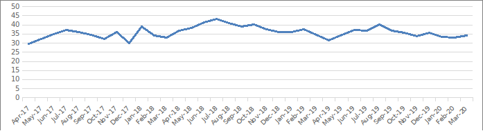<figcaption>Fig 1. Preterm birth rates (per 1000 LB) between FY 18-FY20</figcaption></figure></div>


<p><strong>Seasonality in preterm births?<br></strong>The identification of preventable risk factors for preterm births of major public health importance. It hence may be critical to also review the variation in preterm births. Data from FY 2017-18 to FY 2019-20 does indicate some seasonality in the occurrence of preterm births in Maharashtra. Annually, the highest preterm birth rates were usually observed between July- August. Following this peak, there is a dip in September and a spike in rates again in October. The rates again increase around January-February. Preterm birth rates are usually low between March-April (Figure 1). The spike in preterm birth rates coincides with the monsoon season when the prevalence of infectious diseases is high.<sup>5</sup> The period of July-August also corresponds to the Kharif farming season. Preoccupation with hard physical labour for long hours under stressful conditions is likely associated with an increase in preterm birth.<sup>2</sup></p>


<div class="wp-block-image">
<figure class="aligncenter size-full is-resized">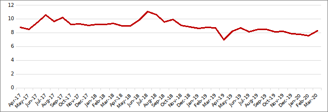<figcaption>Fig 2. Stillbirth rates (per 1000 TB) between FY18-FY20</figcaption></figure></div>


<p><strong>Is there seasonal variation in stillbirths?</strong></p>


<p>While it appears that even stillbirth incidence is influenced by the farming and monsoon seasons, stillbirths showcase a more prominent pattern of seasonality compared to preterm births. This also suggests the presence of potential risk factors associated with the season. Stillbirth rates increase from May and peak usually in July. However post-peak, there is a steady decline in stillbirth rates that continues till April when stillbirth rates are the lowest (Figure 2).</p>


<p>To an extent, the peak of stillbirth rates in July coincides with the first peak (July-August) in preterm birth rates which indicates the possibility of the peaks being related as has also been observed previously.<sup>4</sup> Also, the period (May-June) when stillbirth rates start increasing is the hottest. It is known that exposure to high temperatures induces dehydration which has implications for adverse pregnancy outcomes like stillbirths.<sup>4</sup></p>


<p><strong>Key Takeaways &amp; Policy Implications</strong></p>


<p>The data indicates that there is some seasonality in the occurrence of adverse birth outcomes, especially stillbirths. The maximum preterm birth rate was usually reported between July-August whereas the stillbirth rates were usually high between June-July. The data also has policy implications. Seasonal patterns would possibly reflect the different etiologies of these adverse birth outcomes. Hence, identifying critical windows of susceptibility would help local administrators determine the potential risk factors that may necessitate programmatic action, plan targeted action for certain groups, or determine the appropriate periods for effective interventions to prevent preterm births and stillbirths. For instance, the regularity of peaks in preterm births or stillbirths can also help local administrators charged with improving obstetric care to plan the dissemination of education messages or maintain stocks of drugs needed to reduce the risk of preterm labour.<sup>6</sup></p>


<p><strong>Policy Recommendations</strong></p>


<p>Timely identification of pregnancy complications plays a critical role in preventing and managing adverse birth outcomes. Hence, early registration of pregnancies and conducting the required antenatal visits as per mandate is critical.<sup>7</sup> Tracking pregnant women, especially those who were classified as high risk till completion of the term is important to ensure adequate antenatal care and case management. Maintenance of information/records, distribution of maternal and child protection (MCP) cards, and frequent home visits by healthcare workers would be crucial for this purpose.</p>


<p>Healthcare workers must counsel pregnant women and their families on nutrition and care during pregnancy and birth preparedness in addition to informing them about the danger signs of complications, the need to report to a facility at first signs of complications, and the need for institutional delivery. Periodic training and sensitization of healthcare workers to aid in the identification of high-risk pregnancies and also emphasize key messages related to guidelines for the management of these birth outcomes is also essential.<sup>6-7</sup></p>


<p><strong>References</strong></p>


<ol class="wp-block-list"><li>Osei, E., Agbemefle, I., Kye-Duodu, G., &amp; Binka, F. N. (2016). Linear trends and seasonality of births and perinatal outcomes in Upper East Region, Ghana from 2010 to 2014. BMC pregnancy and childbirth, 16(1), 1-9.</li><li>Goldenberg, R. L., Culhane, J. F., Iams, J. D., &amp; Romero, R. (2008). Epidemiology and causes of preterm birth. The lancet, 371(9606), 75-84.</li><li>Lawn, J. E., Gravett, M. G., Nunes, T. M., Rubens, C. E., &amp; Stanton, C. (2010). Global report on preterm birth and stillbirth (1 of 7): definitions, description of the burden and opportunities to improve data. BMC pregnancy and childbirth, 10(1), 1-22.</li><li>Bernard, R. P., Bhatt, R. V., Potts, D. M., &amp; Rao, A. P. (1978). Seasonality of birth in India. Journal of Biosocial Science, 10(4), 409-421.</li><li>Locks, L. M., Patel, A., Katz, E., Simmons, E., &amp; Hibberd, P. (2021). Seasonal trends and maternal characteristics as predictors of maternal undernutrition and low birthweight in Eastern Maharashtra, India. Maternal &amp; Child Nutrition, 17(2), e13087.</li><li>Ministry of Health and Family Welfare. (2014). Use of Antenatal Corticosteroids in Preterm Labour. Operational Guidelines. National Health Mission</li><li>Ministry of Health and Family Welfare. (2010). Guidelines for Antenatal Care and Skilled Attendance at Birth by ANMs/LHVs/SNs. National Health Mission.</li></ol>


<p>We acknowledge the support of the National Health Mission, CTARA-IIT Bombay, and the GISE Hub, IIT Bombay.</p>


<p><strong>Authors</strong></p>


<p>Marian Abraham &amp; Prof. Sarthak Gaurav</p>


<p>Marian Abraham is a Senior Research Analyst at the Koita Centre For Digital Health, IIT Bombay.</p>


<p>Prof. Sarthak Gaurav is an Associate Professor at Shailesh J. Mehta School of Management, IIT Bombay.</p>


<div style="height:30px" aria-hidden="true" class="wp-block-spacer"></div>


<p><em><strong>Suggested citation</strong>: Abraham, M., &amp; Gaurav., S. (2024). Seasonality in occurrence of adverse birth<br>outcomes in Maharashtra. Nutrition Group, IIT Bombay</em></p>
]]></content:encoded>
					
					<wfw:commentRss>../policy-brief-seasonality-in-occurrence-of-adverse-birth-outcomes/feed/</wfw:commentRss>
			<slash:comments>0</slash:comments>
		
		
		<post-id xmlns="com-wordpress:feed-additions:1">1985</post-id>	</item>
		<item>
		<title>PB No. 16 Birth seasonality in Haryana: from evidence to action</title>
		<link>../birth-seasonality-in-haryana-from-evidence-to-action/</link>
					<comments>../birth-seasonality-in-haryana-from-evidence-to-action/#respond</comments>
		
		<dc:creator><![CDATA[Nutrition Group]]></dc:creator>
		<pubDate>Fri, 01 Mar 2024 04:04:52 +0000</pubDate>
				<category><![CDATA[Policy Briefs]]></category>
		<category><![CDATA[Birth seasonality]]></category>
		<category><![CDATA[Haryana]]></category>
		<category><![CDATA[HMIS]]></category>
		<category><![CDATA[policy]]></category>
		<guid isPermaLink="false">../?p=1977</guid>

					<description><![CDATA[The policy brief discusses birth seasonality in Haryana, highlighting its connection to agricultural cycles. It explores implications for maternal and child health services, advocating for enhancing obstetric care, delivery of child and reproductive health services and social initiatives.]]></description>
										<content:encoded><![CDATA[
<p>Human births follow a seasonal pattern where there are specific periods during which many births occur. Birth seasonality is largely considered to be a product of the rate of conceptions that occurred 9 months earlier. The presence of rhythms in the distribution of births throughout the year—or birth seasonality is a multifactor phenomenon [1]. Birth patterns may vary according to geography and can be characterized by temporal factors. Recent research has observed distinct seasonal childbirth patterns in different states of India, mostly as a result of agro-climatic factors [2]. The examination of region-specific birth patterns is also important because of its policy implications. Given the demands on the public health system, the application of seasonal patterns in births or, by appropriate lagging, conception in health system planning can potentially improve the delivery of critical maternal and child health services [2-3].</p>


<p>In this policy brief, patterns of birth seasonality are examined between the period of FY 18-FY20 in the state of Haryana using Health Management Information System (HMIS) data. It then showcases the key policy implications of birth seasonality.</p>


<p><strong>Strong Birth Seasonality in Haryana?<br></strong>Conception, followed by childbirth in Haryana appears to be strongly influenced by the monsoon season and cultivation. Every year, births peak during the months of August-October which decline thereafter but dip sharply between February-March (Figure 1).</p>


<figure class="wp-block-image size-full"><figcaption>Figure 1. Seasonality of births in Haryana between FY18-FY20<br>Source: HMIS</figcaption></figure>


<p>Haryana is primarily an agricultural state, with 70% of its population engaged in agriculture [4]. Strong seasonality in births in Haryana reflects the influence of the “northern agrarian pattern”. The peak in births during August-October corresponds to conception between the winter months of November-January which is also a period of food abundance since it follows the harvesting of important kharif food crops. Similarly, the dip in February–March corresponds to conception during May–June and falls in the farming cycle where rabi crops are harvested. It is also a period with less abundance of food and money at the time of sowing the Kharif crops [2]. A stable birth pattern can be helpful to local administrators who can use this information to plan the delivery of essential health services in the state.</p>


<p><strong>Information on birth seasonality has at least 5 key policy implications:</strong></p>


<ol class="wp-block-list"><li><strong>Obstetric Care</strong>: A Key Priority for Action: Improving obstetric care is essential to tackle maternal morbidity and mortality. The notable seasonal variations in births would influence the demand for health services and relax constraints on facilities during the leaner spring months. NFHS 5 data shows that institutional deliveries account for 95% of all births and nearly 58% were births in public facilities [5]. Given that a third of the births happen between August to October, local administration can plan effectively to ensure the availability of transportation to public health facilities and quality in-facility services. Ante-natal and post-natal services would be likewise affected. Appropriate staffing allocations would have to be made to meet seasonal demands.<br></li><li><strong>Improving the Delivery of Child Health Services</strong>: Birth immunization plays an important role in child survival. According to HMIS data, the coverage of birth doses of important vaccines like Vitamin K1 is not optimal. The gaps in the delivery of such vaccines are due to insufficient supply and poor awareness of health workers [6]. It is essential that state and district-level health administrations not only effectively plan to ensure there is adequate stock of birth vaccines (BCG, Vitamin K, Hepatitis B, and OPV) during the birth peak months. Additionally, district training centers under the Department of Health can periodically conduct refresher training.<br></li><li><strong>Improving Reproductive Health Services</strong>: Ensuring that women of reproductive age satisfy their family planning needs with modern methods is essential to ensure the new global target of universal access to sexual and reproductive healthcare services [7]. NFHS-5 shows that 7.6% of married women aged 15-49 years in Haryana were unable to meet their needs for family planning in 2019-21 [5]. Frontline health workers are required to disseminate messages on family planning in a timely manner [8] but only 25% of female non-users in the state have been ever spoken to about family planning by health workers [5].<br>To reduce this gap, information on seasonality in conceptions must be utilized to inform the implementation of family planning services. Counseling and distribution of conventional contraceptives are important activities of village health and nutrition days [9] and can be further prioritized during the months of November, December, and January. Households with newly married couples, women who have recently delivered, and families that usually migrate for farm labor can be targeted for household counseling visits during this period. Monthly plans of Sub-centers and Primary Health Centers must accommodate an adequate supply of contraceptives for distribution specifically during these months. At the state level, the promotion of family planning campaigns can be intensified by the Health &amp; Family Welfare department during the peak conception period.</li></ol>


<ol class="wp-block-list" start="4"><li><strong>Prioritization of initiatives for social change</strong>:<br>Despite progress in the past decade, Haryana currently has one of the lowest sex ratios in the country, highlighting that the practice of gender-biased sex-selective abortion is still rampant [10]. The timing of birth can inform monitoring efforts as well as aid the implementation of social awareness programs in gender-critical districts of the state. The district health department must take steps to monitor the sex ratio at birth, ensure 100% registration of pregnancies and births, and complete minimum antenatal care checkups in accordance with the Beti Bachao Beti Padhao Scheme [11].<br></li><li><strong>Future goals to strengthen evidence-based policy implementation</strong>: Given the importance of birth-related information in improving service delivery, it is critical that such evidence is periodically compiled and used by local health administration even at sub-district level in addition to state and district levels. Further granular-level analysis of birth data and cross-comparison with program data can also help identify priorities or gaps.</li></ol>


<p><strong>References</strong></p>


<ol class="wp-block-list"><li>Cancho-Candela, R., Andrés-de Llano, J. M., &amp; Ardura-Fernandez, J. (2007). Decline and loss of birth seasonality in Spain: analysis of 33 421 731 births over 60 years. Journal of Epidemiology &amp; Community Health, 61(8), 713-718.</li><li>Nambiar, A., Chowdhury, D., &amp; Agnihotri, S. B. (2022). Seasonal Variations in Childbirth A Perspective from the HMIS Database (2017–20). Economic &amp; Political Weekly, 7(17).</li><li>Ogum, G. E. O., &amp; Okorafor, A. E. (1979). Seasonality of births in south-eastern Nigeria. Journal of Biosocial Science, 11(2), 209-217.</li><li>CIMMYT. (2023). Cropping Systems of Haryana – Challenges and Opportunities. Retrieved from https://repository.cimmyt.org/handle/10883/22640</li><li>Indian Institute for Population Science.,&amp; MoHFW. (2021). Haryana. National Family Health Survey (NFHS 5) 2019-21. Retrieved from http://rchiips.org/nfhs/NFHS-5_FCTS/Haryana.pdf</li><li>Bora, K. (2021). Gaps in the coverage of vitamin K1 prophylaxis among newborns in India: insights from secondary analysis of data from the Health Management Information System. Public Health Nutrition, 24(17), 5589-5597.</li><li>UN. (2015). Sustainable Development Goals. Goals 3. United Nations. Retrieved from https://sdgs.un.org/goals/goal3</li><li>Ministry of Health and Family Welfare. (n.d.). Family Planning methods: Brochure for ASHA. Retrieved from https://nhm.gov.in/images/pdf/programmes/family-planing/guidelines/Asha-Brochure-English.pdf</li><li>Ministry of Health and Family Welfare.(2019). National Guidelines for Village Health, Sanitation &amp; Nutrition Day .Retrieved from https://nhm.gov.in/New_Updates_2018/NHM_Components/RMNCHA/CH/Guidelines/National_Guidelines_on_VHSND_English_High_Res_Print_ready.pdf</li><li>Ministry of Women and Child Development. (2022). Sex Ratio at Birth. Press Information Bureau. Retrieved from https://pib.gov.in/PressReleasePage.aspx?PRID=1806605</li><li>Ministry of Women and Child Development. (2019). Beti Bachao Beti Padhao Scheme Implementation Guidelines. Retrieved from https://wcd.nic.in/sites/default/files/Guideline_6.pdf</li></ol>


<p>We acknowledge the support of the National Health Mission, CTARA-IIT Bombay, and the GISE Hub, IIT Bombay.</p>


<p><strong>Authors</strong></p>


<p>Marian Abraham &amp; Prof. Sarthak Gaurav</p>


<p>Marian Abraham is a Senior Research Analyst at the Koita Centre For Digital Health, IIT Bombay.</p>


<p>Prof. Sarthak Gaurav is an Associate Professor at Shailesh J. Mehta School of Management, IIT Bombay.</p>


<div style="height:30px" aria-hidden="true" class="wp-block-spacer"></div>


<p><em><strong>Suggested citation:</strong> Abraham, M., &amp; Gaurav., S. (2024). Birth seasonality in Haryana: from evidence to action. Nutrition Group, IIT Bombay</em></p>
]]></content:encoded>
					
					<wfw:commentRss>../birth-seasonality-in-haryana-from-evidence-to-action/feed/</wfw:commentRss>
			<slash:comments>0</slash:comments>
		
		
		<post-id xmlns="com-wordpress:feed-additions:1">1977</post-id>	</item>
		<item>
		<title>PB No. 15 Low Birth weight prevalence in Maharashtra : identifying priority regions</title>
		<link>../policy-brief-low-birth-weight-prevalence-in-maharashtra-identifying-priority-regions/</link>
					<comments>../policy-brief-low-birth-weight-prevalence-in-maharashtra-identifying-priority-regions/#respond</comments>
		
		<dc:creator><![CDATA[Nutrition Group]]></dc:creator>
		<pubDate>Thu, 29 Feb 2024 05:32:50 +0000</pubDate>
				<category><![CDATA[Policy Briefs]]></category>
		<category><![CDATA[HMIS]]></category>
		<category><![CDATA[hmisanalyzer]]></category>
		<category><![CDATA[LBW]]></category>
		<category><![CDATA[Maharashtra]]></category>
		<category><![CDATA[policy]]></category>
		<guid isPermaLink="false">../?p=1968</guid>

					<description><![CDATA[This policy brief addresses the prevalence of low birth weight (LBW) infants in Maharashtra, a concern that has long-term implications on health and well-being. Using Health Management Information System (HMIS) data, it identifies priority regions and suggests interventions targeting antenatal care and post-natal management to reduce LBW incidence.]]></description>
										<content:encoded><![CDATA[
<p>The World Health Organization (WHO) defines low birth weight (LBW) as birth weight of less than 2500 grams irrespective of gestational age.<sup>1</sup> In 2015, 20.5 million low birthweight babies were born globally, making up 14.6% of all babies and South Asia accounted for nearly half of these babies.<sup>2</sup> LBW incidence is not only associated with increased neonatal mortality, and child malnutrition but also with increased risk of diseases that occur later in life such as diabetes, hypertension and cardiovascular diseases.<sup>3-5</sup> Reducing LBW incidence hence would be critical to achieving SDG targets on child health and general well-being.<sup>6</sup> In 2012, the 65<sup>th</sup> World Health Assembly passed a resolution promoting a Comprehensive implementation plan on maternal, infant, and young child nutrition which specified six global targets to be achieved by 2025 including a 30% reduction in LBW incidence.<sup>7</sup></p>


<p>As per a recent study, 17.06% of infants in India were born with a weight &lt;2.5 kg at birth in 2019-21 however incidence in Maharashtra was slightly higher at 18.9%.<sup>8</sup> However, there is little information about the prevalence at district and block levels. The Health Management Information System (HMIS) is the only source that monitors critical health indicators below the state level on a monthly basis.</p>


<p>The current policy brief uses HMIS data from FY 2017-18 to 2019-20 to identify regions with the highest LBW incidence. The broader aim is to inform decision-making, including highlighting interventions that could reduce the incidence of LBW in the state.</p>


<div class="wp-block-image">
<figure class="aligncenter size-full is-resized"><figcaption><strong>Fig 1.</strong> Infants born with weight &lt;2.5 kg in districts of Maharashtra in FY18</figcaption></figure></div>


<p class="has-small-font-size">Source: HMIS</p>


<p><strong>Districts with the highest incidence of low-birth-weight babies?</strong></p>


<p>Identifying districts that consistently have a high incidence of infants born with a weight below 2.5 kg is critical for targeted intervention. Between FY 2017-18 and 2019-20, high percentages of low-birth-weight infants were reported by 8 districts―Palghar, Amravati, Chandrapur, Nandurbar, Gadchiroli, Bhandara, Gondia, and Sindhudurg. However, Gadchiroli, Chandrapur, and Amravati featured among the five districts with the highest incidence over the three years. Chandrapur which reported the highest incidence in FY 18 reported a notable reduction of 6.5 percentage points between FY18 and FY20. In contrast, Jalgaon and Buldhana reported the lowest incidence in the state through the three years.</p>


<div class="wp-block-image">
<figure class="aligncenter size-full is-resized">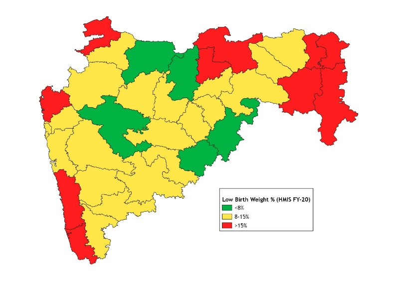<figcaption><strong>Fig 2.</strong> Infants born with weight &lt;2.5 kg in districts of Maharashtra in FY20</figcaption></figure></div>


<p class="has-small-font-size">Source: HMIS</p>


<p>The color-coded maps highlight regional clusters during FY18 and FY20 (Figures 1 &amp; 2). Several districts that reported a high incidence in 2017-18 also reported a high LBW incidence in 2019-20. The most prominent clusters of high incidences of LBW infants in FY20 were located in the northern and northeastern parts of the state. Two districts in southern Maharashtra also have high incidence. However, the patches of green showcasing low incidence that were largely located in the eastern part of the state have visibly changed to moderate incidence (yellow) since FY18.</p>


<div class="wp-block-image">
<figure class="aligncenter size-large is-resized">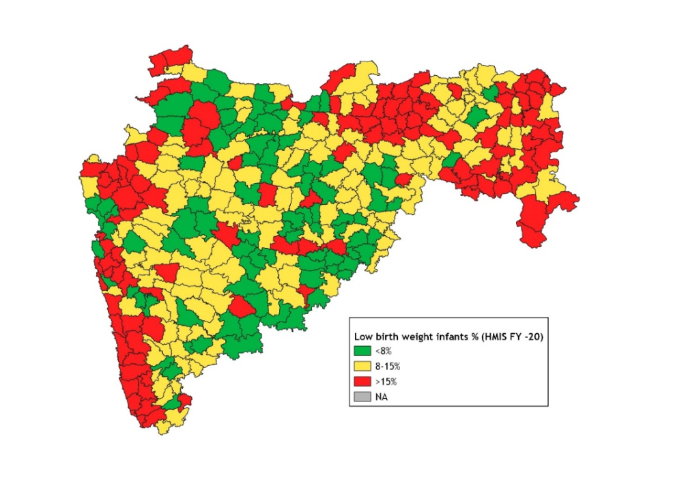<figcaption><strong>Fig 3.</strong> LBW prevalence at taluka/ward level in FY20</figcaption></figure></div>


<p class="has-small-font-size">Source: HMIS</p>


<p><strong>Talukas with the highest incidence of low-birth-weight babies</strong></p>


<p>Apart from identifying the districts that usually report higher births with weight lesser than 2.5kg, it is critical to identify the specific talukas or wards so that local administrators can initiate targeted action. The color-coded map highlights the talukas and wards that reported high (red), moderate (yellow) or low (green) percentages of births that had a weight lesser than 2.5kg in 2019-20 (Figure 3). Many talukas with high percentages of LBW infants were located in districts with high prevalence like Amravati, Gadchiroli, Chandrapur, Ratnagiri, and Sindhudurg. However, a significant cluster of high-incidence talukas was also found in districts Raigad, Nashik, and Yavatmal that reported moderate prevalence. In the year 2019-20, 6 of the 15 talukas or wards with the highest percentage of infants born with low weight (&lt;2.5kg) in Maharashtra were located in districts with moderate prevalence (Table 1). Local administrators need to monitor these regions as well.</p>


<div class="wp-block-image">
<figure class="aligncenter size-full is-resized">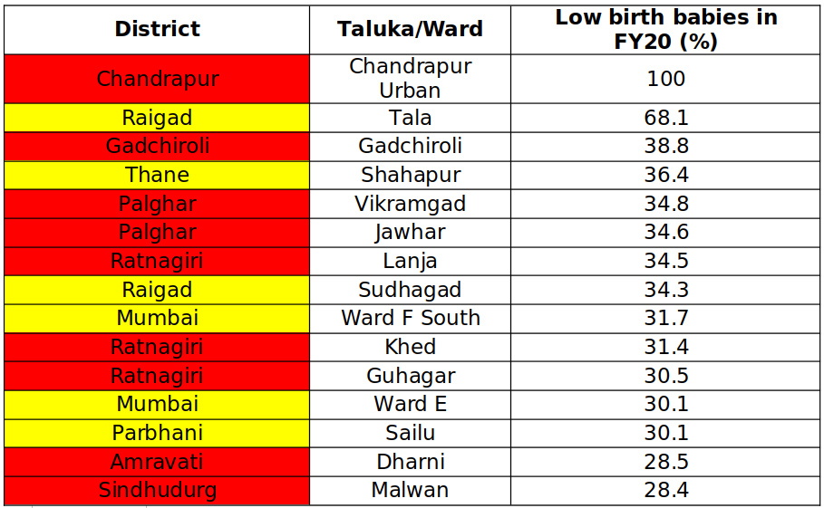<figcaption><strong>Table 1. 15 talukas/wards with highest LBW prevalence in 2019-20</strong></figcaption></figure></div>


<p class="has-small-font-size">Source: HMIS</p>


<p><strong>Reducing and managing LBW prevalence: Key Action Points</strong></p>


<p>LBW significantly impacts child survival, health, and nutritional status.<sup>4-5</sup> The long-term negative effects of LBW can be a hindrance to the state achieving SDG targets for child health and general well-being. However, lowering the incidence of low birth weight requires a comprehensive strategy that focuses on both the antenatal and post-natal periods.</p>


<p>Low birth weight (LBW) babies have a weight &lt;2.5kg regardless of gestational age. It could be a result of preterm birth (short gestation &lt;37 completed weeks), intrauterine growth restriction (IUGR) also known as small-for-gestational-age, or both.<sup>1,9</sup> Evidence places emphasis on early detection and effective management of IUGR and preterm births.<sup>10</sup> Evidence also suggests that improving maternal nutritional status can be beneficial.<sup>11</sup> In the Indian context, there is evidence that anemic mothers are more likely to deliver LBW babies.<sup>12</sup></p>


<p>Hence, it&#8217;s vital that antenatal care providers like ASHAs and ANMs ensure that all pregnant women receive the minimum antenatal care visits, calcium, iron &amp; folic acid supplements, HB testing, and immunization as per guidelines. Additionally, the completion of routine ultrasonography to monitor fetal growth is essential.<sup>13</sup></p>


<p>It is critical that health care workers provide health and nutrition education including counselling mothers to improve their diets, consume oral supplements in a timely manner, complete ANC visits, avoid risks such as smoking and alcohol use, and identify signs of preterm labor is vital.</p>


<p>Post-delivery, managing LBW newborns is critical. In high-priority districts, the Public Health Department must ensure that more health facilities include Kangaroo Mother Care (KMC) units as well as monitor whether the implementation in current health facilities is as per protocol.<sup>14</sup></p>


<p>At home, ASHAs need to conduct periodic home visits to monitor child weight gain and counsel mothers to ensure adequate exclusive breastfeeding of LBW babies as per the home based newborn-care guidelines.<sup>15</sup></p>


<p><strong>References</strong></p>


<ol class="wp-block-list"><li>WHO. (n.d). Low birthweight (prevalence). Retrieved from: <a href="https://www.who.int/data/gho/indicator-metadata-registry/imr-details/76">https://www.who.int/data/gho/indicator-metadata-registry/imr-details/76</a></li><li>United Nations Children’s Fund (UNICEF) &amp; World Health Organization (WHO).(2019). UNICEF-WHO Low birthweight estimates: Levels and trends 2000–2015. Geneva: <em>World Health Organization</em>.</li><li>Negrato, C. A., &amp; Gomes, M. B. (2013). Low birth weight: causes and consequences. <em>Diabetology &amp; metabolic syndrome</em>, 5(1), 1-8.</li><li>Kaushik, S. L., Parmar, V. R., Grover, N., &amp; Kaushik, R. (1998). Neonatal mortality rate: relationship to birth weight and gestational age. <em>The Indian Journal of Pediatrics</em>, 65, 429-433.</li><li>Jana, A., Dey, D., &amp; Ghosh, R. (2021). Contribution of Low Birth Weight to Childhood Malnutrition in India. <em>Research Square</em>, 1-26.</li><li>World Bank. (n.d.). Sustainable Development Goals and Targets.</li><li>WHO.(2012). 65<sup>th</sup> World Health Assembly: Resolutions &amp; Decisions. Geneva: <em>World Health Organization</em>.</li><li>Singh, D., Manna, S., Barik, M., Rehman, T., Kanungo, S., &amp; Pati, S. (2023). Prevalence and correlates of low birth weight in India: findings from national family health survey 5. BMC Pregnancy and Childbirth, 23(1), 1-13.</li><li>Cutland, C. L., Lackritz, E. M., Mallett-Moore, T., Bardají, A., Chandrasekaran, R., Lahariya, C., &#8230; &amp; Brighton Collaboration Low Birth Weight Working Group. (2017). Low birth weight: Case definition &amp; guidelines for data collection, analysis, and presentation of maternal immunization safety data. Vaccine, 35(48Part A), 6492.</li><li>Committee to Study the Prevention of Low Birthweight. (1985). Preventing Low Birthweight. Summary &amp; Recommendations. Retrieved from: <a href="https://www.ncbi.nlm.nih.gov/books/NBK214456/">https://www.ncbi.nlm.nih.gov/books/NBK214456/</a></li><li>da Silva Lopes, K., Ota, E., Shakya, P., Dagvadorj, A., Balogun, O. O., Peña-Rosas, J. P., &#8230; &amp; Mori, R. (2017). Effects of nutrition interventions during pregnancy on low birth weight: an overview of systematic reviews. BMJ global health, 2(3), e000389.</li><li>Jana, A. (2023). Correlates of low birth weight and preterm birth in India. Plos one, 18(8), e0287919.</li><li>MoHFW. (n.d.). Mother and Child Protection Card. Ministry of Health and Family Welfare.</li><li>MoHFW . (2014). Kangaroo Mother care &amp; Optimal Feeding of Low birth weight infants: Operational Guidelines. Ministry of Health and Family Welfare.</li><li>MoHFW. (2014). Home-Based Newborn Care. National Health Mission. Ministry of Health and Family Welfare.</li></ol>


<p>We acknowledge the support of the National Health Mission, CTARA-IIT Bombay, and the GISE Hub, IIT Bombay.</p>


<p><strong>Authors</strong></p>


<p>Marian Abraham &amp; Prof. Sarthak Gaurav</p>


<p>Marian Abraham is a Senior Research Analyst at the Koita Centre For Digital Health, IIT Bombay.</p>


<p>Prof. Sarthak Gaurav is an Associate Professor at Shailesh J. Mehta School of Management, IIT Bombay.</p>


<div style="height:30px" aria-hidden="true" class="wp-block-spacer"></div>


<p><em><strong>Suggested citation:</strong> Abraham, M., &amp; Gaurav., S. (2024). Low Birth weight prevalence in Maharashtra : identifying priority regions. Nutrition Group, IIT Bombay</em></p>
]]></content:encoded>
					
					<wfw:commentRss>../policy-brief-low-birth-weight-prevalence-in-maharashtra-identifying-priority-regions/feed/</wfw:commentRss>
			<slash:comments>0</slash:comments>
		
		
		<post-id xmlns="com-wordpress:feed-additions:1">1968</post-id>	</item>
		<item>
		<title>PB No. 14 Deworming for pregnant women in Maharashtra: key priority in ANC package?</title>
		<link>../policy-brief-deworming-for-pregnant-women-key-priority-in-anc-package/</link>
					<comments>../policy-brief-deworming-for-pregnant-women-key-priority-in-anc-package/#respond</comments>
		
		<dc:creator><![CDATA[Nutrition Group]]></dc:creator>
		<pubDate>Wed, 28 Feb 2024 16:51:05 +0000</pubDate>
				<category><![CDATA[Policy Briefs]]></category>
		<category><![CDATA[deworming]]></category>
		<category><![CDATA[HMIS]]></category>
		<category><![CDATA[hmisanalyzer]]></category>
		<category><![CDATA[Maharashtra]]></category>
		<category><![CDATA[policy]]></category>
		<guid isPermaLink="false">../?p=1956</guid>

					<description><![CDATA[This policy brief delves into the imperative of deworming for pregnant women within antenatal care (ANC) services, highlighting its crucial role in mitigating maternal complications and adverse birth outcomes caused by soil-transmitted helminth (STH) infections in Maharashtra.]]></description>
										<content:encoded><![CDATA[
<p>Soil-transmitted helminth (STH) infections are an important cause of the burden of morbidity globally, affecting an estimated 1.5 billion people worldwide, the majority of which are women of reproductive age (WRA) including pregnant women<sup>1</sup>. STH infections result in severe blood loss and malabsorption of nutrients<sup>2</sup>. Pregnant women with intestinal worm infections are at an increased risk of maternal complications and adverse outcomes such as anemia, low birth weight, and perinatal mortality<sup>1</sup>. Deworming is one of the primary preventive approaches to deal with STH globally and its use does not result in adverse birth outcomes<sup>2</sup> instead, studies have observed that antenatal deworming reduces the risk of maternal anemia, childhood anemia and stunting, low birth weight, and neonatal mortality<sup>3-5</sup>. In recognition of the efficacy and importance of preventive deworming therapy, the WHO recommends administering deworming through anthelminthic drugs like albendazole in pregnant women post the 1st trimester<sup>6</sup>. In accordance with WHO, the national guidelines on antenatal deworming prescribe a single dose of 400 mg of albendazole after 1st trimester, also recognizing that iron and folic acid tablets are alone inadequate to reduce maternal anemia<sup>7</sup>. India is also known to be endemic for soil-transmitted helminth infections, though prevalence estimates for pregnant women are lacking<sup>3</sup>. This makes the implementation of deworming interventions critical.</p>


<p>Examination of deworming coverage is vital to track the progress of implementation, reflect on possible gaps in delivery, and support planning to scale up coverage. The Health Management Information System (HMIS) is the only source that monitors critical health indicators below the state level on a monthly basis.</p>


<p>The policy brief examines data of key ANC services from the financial years prior to the onset of the pandemic i.e. FY 2017-18 to 2019-20. The aim of this policy brief is to facilitate understanding of coverage of an important intervention like antenatal deworming and promote its uptake.</p>


<p><strong>Is there adequate coverage of Albendazole?<br></strong>According to the national protocol, albendazole is the recommended drug for deworming during pregnancy. The mandate requires a single dose of albendazole to be done after the 1st trimester of pregnancy<sup>7</sup>. As per HMIS data, this mandate is only moderately met in the state―69.1% of pregnant women who received 4 or more ANC visits in Maharashtra were given one albendazole tablet after the 1st trimester in FY 2019-20. However, this coverage is an improvement from the previous years. In 2017-18, only 49.8% of pregnant women with 4 or more ANC visits were given 1 albendazole tablet after the 1st trimester and this notably increased to 61.2% in 2018-19. It is evident that the state must meet the critical gap in deworming coverage to ensure maternal well-being and prevent adverse pregnancy outcomes.</p>


<p><strong>Does Albendazole coverage match up to other ANC services?<br></strong>The antenatal care (ANC) package includes different services that must be delivered promptly to pregnant women as per set guidelines. HMIS data between FY18- FY 20 shows that among pregnant women who have received 4 or more ANC check-ups, the coverage of one tablet of albendazole post 1st trimester is the least compared to other ANC services though the coverage gap has been steadily reducing since FY 19 (Figure 1).</p>


<div class="wp-block-image">
<figure class="aligncenter size-full">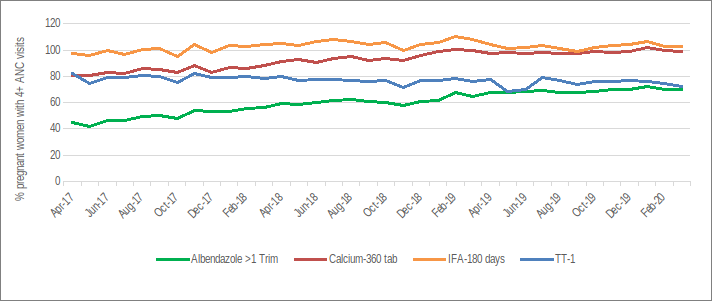<figcaption>Fig 1. Coverage of key ANC services between FY18-FY20</figcaption></figure></div>


<p>While the universal coverage of iron and folic acid (IFA) tablets for 180 days and 360 calcium tablets raises concerns about over-reporting, it does appear that the implementation of these is efficient. Iron and folic acid tablet distribution and TT injections have been part of the basic ANC package at least since 2010<sup>8</sup>. However, the guidelines that mandate deworming through albendazole tablets and calcium tablets were introduced in the same year i.e. 2014<sup>7,9</sup> which indicates that the implementation of deworming was not prioritized.</p>


<p><strong>District-level coverage: Where should focus lie?<br></strong>Coverage patterns of deworming during pregnancy varied throughout the state. In 2019-20, most districts with high coverage (&gt;70% coverage) of albendazole were located in the northern and eastern parts of the state. Nanded, Gondia, Wardha, and Gadchiroli districts consistently reported the highest coverage rates in both 2017-18 and 2019-20 (Figure 2). Most districts with the highest rates of anemia among women of reproductive age as per NFHS -5<sup>10</sup> also reported the highest deworming coverage. This is evident given that deworming is emphasized as one of the primary interventions to reduce maternal anemia<sup>7,11</sup>.</p>


<div class="wp-block-image">
<figure class="alignleft size-full is-resized">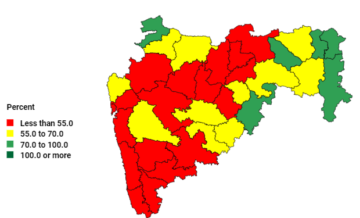</figure></div>


<figure class="wp-block-image size-full is-resized">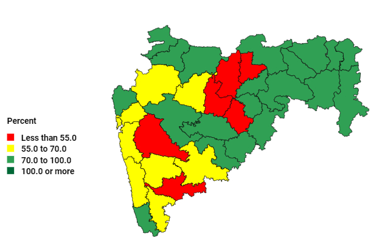<figcaption>Fig 2. Mapping albendazole coverage among pregnant women in 2017-18 (Left-side) and 2019-20 (right-side)</figcaption></figure>


<p>HMIS data also shows that Maharashtra would have to prioritize action in the cluster of districts with the lowest coverage largely located in central Maharashtra―Akola, Buldhana, Jalna, and Parbhani. The state would also have to take up significant efforts to scale up coverage in the district of Pune which is the only district where coverage rates have declined between 2017-18 and 2019-20.</p>


<p><strong>Key Takeaways &amp; Policy Implications<br></strong>The data showcases the low coverage of a single dose of albendazole tablet post the first trimester in the state. Despite the ease to deliver a single dose of Albendazole tablet preferably during the 2nd trimester (deworming guidelines), the coverage of this intervention is much lower than other ANC services like the distribution of iron and folic acid tablets for a minimum of 180 days from the 2nd trimester and distribution of 360 calcium tablets during the 14th to 40th week of pregnancy.<sup>9,11</sup> However, the data also indicates that districts with high maternal anemia gave due importance to the implementation of the deworming intervention. There is hence a need to sensitize health workers in all districts on the importance of deworming to improve maternal health including prevention of anemia.</p>


<p>Information on district-level deworming coverage is vital to improving service delivery. Sensitization of healthcare workers would be critical to scale up coverage in districts with the lowest deworming rates (Pune, Jalna, Buldhana, Akola and Parbhani).</p>


<p>While the coverage gap is highlighted, the severity of this gap at the district level cannot be understood without the availability of district-level STH infection prevalence estimates. The national guidelines on antenatal deworming prescribe universal coverage of pregnant women in STH endemic areas (areas &gt;20% prevalence)<sup>7</sup>. Understanding the prevalence of soil-transmitted helminth infections at the district level is necessary to plan control strategies and focus on highly endemic regions for preventive therapy as per norms.</p>


<p><strong>Policy Recommendations<br></strong>Maternal anaemia rates are high at both national and state levels as per NFHS-5<sup>12</sup>. However, HMIS data shows that despite the government’s recognition of the importance of deworming in the reduction of maternal anemia, the evident gap between deworming and other ANC services like IFA distribution indicates that frontline healthcare workers may not perceive its importance. Currently, guidelines require ANMs and medical officers to be trained to ensure knowledge of the program, deworming drugs, their dosage, and administration during the ANC period whereas ASHAs receive an orientation on the program and to support monitoring and counselling for this service.<sup>7</sup> Refresher training should also be periodically conducted to reiterate the importance of this intervention.</p>


<p>Healthcare workers need to increase awareness about the importance of deworming among pregnant women, families, and the community. Healthcare workers should be given adequate IEC material and job aids to support community and mother education. Ensuring compliance with the minimum of 4 ANC visits and distribution of mother-child protection cards that help monitor the consumption of albendazole tablets could also help increase the uptake of antenatal deworming.</p>


<p>Currently, the incentive structure of ASHAs, the frontline workers that operate at the community level does not appear to support monitoring the consumption of deworming by pregnant women, unlike IFA consumption<sup>13</sup>. An incentive for ASHAs to monitor deworming consumption during the ANC period would ensure its better uptake.</p>


<p><strong>References</strong></p>


<ol class="wp-block-list"><li>Zegeye, B., Keetile, M., Ahinkorah, B. O., Ameyaw, E. K., Seidu, A. A., &amp; Yaya, S. (2021). Utilization of deworming medication and its associated factors among pregnant married women in 26 sub-Saharan African countries: a multi-country analysis. Tropical Medicine and Health, 49(1), 1-15.</li><li>Gyorkos, T. W., &amp; St-Denis, K. (2019). Systematic review of exposure to albendazole or mebendazole during pregnancy and effects on maternal and child outcomes, with particular reference to exposure in the first trimester. International journal for parasitology, 49(7), 541-554.</li><li>Salam, N., &amp; Azam, S. (2017). Prevalence and distribution of soil-transmitted helminth infections in India. BMC Public Health, 17(1), 1-12.</li><li>Walia, B., Kmush, B. L., Lane, S. D., Endy, T., Montresor, A., &amp; Larsen, D. A. (2021). Routine deworming during antenatal care decreases risk of neonatal mortality and low birthweight: a retrospective cohort of survey data. PLoS neglected tropical diseases, 15(4), e0009282.</li><li>Traore, S. S., Bo, Y., Kou, G., &amp; Lyu, Q. (2023). Iron supplementation and deworming during pregnancy reduces the risk of anemia and stunting in infants less than 2 years of age: a study from Sub-Saharan Africa. BMC Pregnancy and Childbirth, 23(1), 63.</li><li>World Health Organization. (2017). Guideline: preventive chemotherapy to control soil-transmitted helminth infections in at-risk population groups. World Health Organization.</li><li>MoHFW. (2014). National Guidelines for Deworming in Pregnancy. Ministry of Health &amp; Family Welfare (MoHFW). Government of India.</li><li>MoHFW. (2010). Guidelines for Antenatal Care and Skilled Attendance at Birth by ANMs/LHVs/SNs. Ministry of Health &amp; Family Welfare (MoHFW). Government of India.</li><li>MoHFW. (2014). National Guidelines for Calcium Supplementation During Pregnancy and Lactation. Maternal Health Division. Ministry of Health &amp; Family Welfare (MoHFW). Government of India.</li><li>MoHFW. (n.d.). Anaemia in 15-49 year old women, Maharashtra, NFHS5 2019-2021. Health Nutrition India. Retrieved from: https://healthnutritionindia.in/dashboard/2/1/71</li><li>NHM. (n.d.) Anaemia Mukt Bharat 6 interventions. National Health Mission. Retrieved from: https://anemiamuktbharat.info/interventions/</li><li>MoHFW. (n.d.). Anaemia in pregnant women, India, NFHS5 2019-2021. Health Nutrition India. Retrieved from: https://healthnutritionindia.in/dashboard/3/1/239</li><li>NHM (n.d.). ASHA incentives – FY 2020-21. National Health Mission</li></ol>


<p>We acknowledge the support of the National Health Mission, CTARA-IIT Bombay, and the GISE Hub, IIT Bombay.</p>


<p><strong>Authors</strong></p>


<p>Marian Abraham, Prof. Sarthak Gaurav</p>


<p>Marian Abraham is a Senior Research Analyst at the Koita Centre For Digital Health, IIT Bombay.</p>


<p>Prof. Sarthak Gaurav is an Associate Professor at Shailesh J. Mehta School of Management, IIT Bombay.</p>


<div style="height:30px" aria-hidden="true" class="wp-block-spacer"></div>


<p><em><strong>Suggested citation:</strong> Abraham, M., &amp; Gaurav., S. (2024). Deworming for pregnant women in Maharashtra: key priority in ANC package? Nutrition Group, IIT Bombay.</em></p>
]]></content:encoded>
					
					<wfw:commentRss>../policy-brief-deworming-for-pregnant-women-key-priority-in-anc-package/feed/</wfw:commentRss>
			<slash:comments>0</slash:comments>
		
		
		<post-id xmlns="com-wordpress:feed-additions:1">1956</post-id>	</item>
		<item>
		<title>PB No. 13 Incidence of preterm births in Odisha : Identifying regions for targeted intervention</title>
		<link>../policy-brief-incidence-of-preterm-births-in-odisha-identifying-regions-for-targeted-intervention/</link>
					<comments>../policy-brief-incidence-of-preterm-births-in-odisha-identifying-regions-for-targeted-intervention/#respond</comments>
		
		<dc:creator><![CDATA[Nutrition Group]]></dc:creator>
		<pubDate>Tue, 27 Feb 2024 03:29:18 +0000</pubDate>
				<category><![CDATA[Policy Briefs]]></category>
		<category><![CDATA[HMIS]]></category>
		<category><![CDATA[hmisanalyzer]]></category>
		<category><![CDATA[Maharashtra]]></category>
		<category><![CDATA[policy]]></category>
		<category><![CDATA[preterm births]]></category>
		<guid isPermaLink="false">../?p=1946</guid>

					<description><![CDATA[The policy brief delves into the critical issue of preterm births, which pose significant risks to infant mortality and long-term health outcomes. Examining Health Management Information System (HMIS) data from financial years 2017-18 to 2019-20 in Odisha, it reveals persistent high rates of preterm births, particularly in districts with substantial tribal populations.]]></description>
										<content:encoded><![CDATA[
<p>Preterm births are babies that are born before 37 completed weeks of gestation.<sup>1</sup> Preterm birth-related complications accounted for 16% of all deaths among children under the age of 5 years and 35% of deaths among newborn babies in 2018 globally.<sup>2</sup> Preterm infants who survive face an elevated risk of neurodevelopmental impairments and respiratory complications.<sup>1 </sup>There is also evidence that compared to term babies, preterm babies are at a significantly higher risk of becoming underweight and stunted in the first two years of life.<sup>3</sup> One of the targets of the third Sustainable Development Goal is to reduce the mortality of children younger than 5 years and prevention of preterm births and adequate care of preterm infants is critical to ensure that progress is made toward delivery of this target.<sup>4</sup> Achieving this goal would require targeted action in regions that report the highest burden of preterm births.</p>


<p>The Health Management Information System (HMIS) is the only source that monitors critical health indicators below the state level every month. In the current policy brief, the HMIS data for the financial years 2017-18 to 2019-20 is examined to understand the patterns of preterm births in Odisha.</p>


<p><strong>Prevalence of Preterm births in Odisha</strong></p>


<p>Odisha consistently reported high preterm birth rates between FY18 to FY20. According to HMIS data, the preterm birth rate was 56 per 1000 live births in 2017-18 which increased to 60 in 2018-19 but again marginally declined to 59 in 2019-20.</p>


<p><strong>Districts with the highest preterm birth rates in Odisha?</strong></p>


<p>It is important to identify districts of high and low preterm birth incidence to help policymakers make informed decisions and take action. District-wise data shows that 7 districts i.e. Nabarangapur, Rayagada, Kendujhar, Sundargarh, Koraput, Kandhamal, and Boudh consistently featured among the 10 highest preterm incidence districts during FY-18 to FY-20. It is worth noting that 6 of these 7 districts are known to have a significant population of Scheduled Tribes.<sup>5</sup></p>


<div class="wp-block-image">
<figure class="aligncenter size-full is-resized">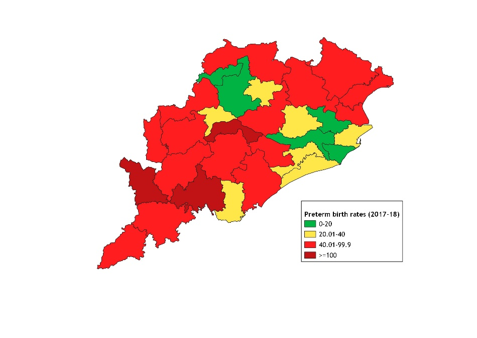<figcaption><strong>Fig 1.</strong> Preterm birth rates in districts of Odisha (FY 18)</figcaption></figure></div>


<p class="has-small-font-size">Source: HMIS</p>


<p>Figure 1 &amp; 2 presents color-coded maps of preterm birth rates (PTR) during 2017-18 and 2019-20. The most prominent clusters with high incidence were located in the southern part of the state. Most districts that reported high PTR in 2019-20 also reported a high PTR in 2017-18 however there have been visible changes in a few districts. The situation in Sambalpur, Sundargarh, Nabarangpur, Khordha and Bhadrak needs to be monitored closely as there has been a significant spike (&gt;20 percentage point increase) in preterm birth rates within a short period between FY18 and FY20. In contrast, despite significantly reducing preterm birth rates since FY18, Boudh, Balangir, Kendujhar, and Kalahandi districts still have high rates of preterm births.</p>


<div class="wp-block-image">
<figure class="aligncenter size-full is-resized">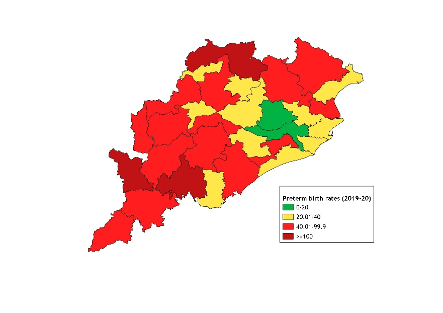<figcaption><strong>Fig 2.</strong> Preterm birth rates in districts of Odisha (FY 20)</figcaption></figure></div>


<p class="has-small-font-size">Source: HMIS</p>


<p><strong>Priority blocks for targeted action</strong></p>


<p>It is instructive to identify which blocks within the priority districts have the highest preterm birth incidence and hence action should be prioritized. 15 blocks with the highest incidence in the state were largely located in districts with high or very high incidence of preterm births. However, the preterm birth rates in these blocks were unusually high and may require further scrutiny (Table 1).</p>


<div class="wp-block-image">
<figure class="aligncenter size-full is-resized">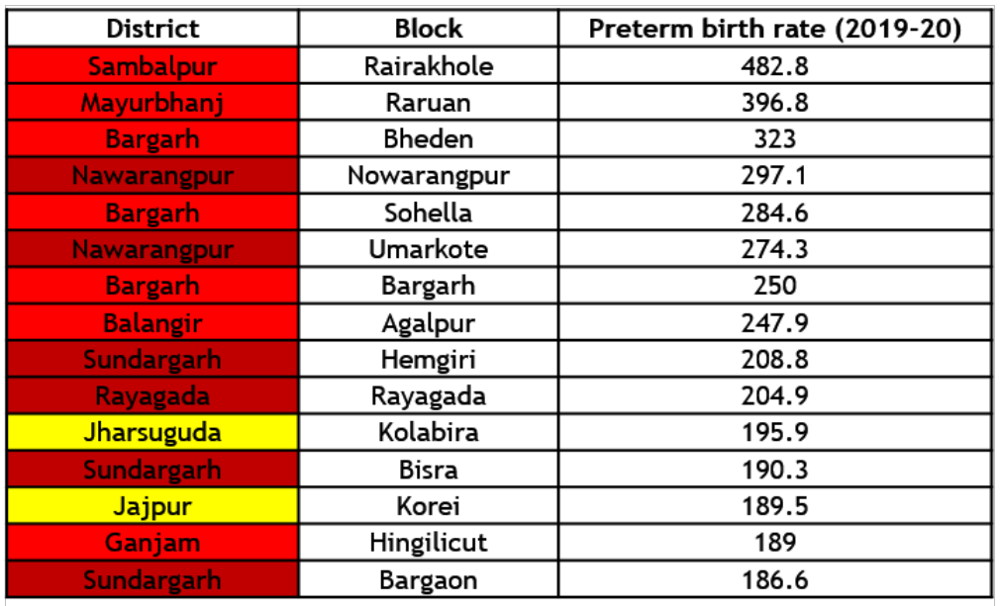<figcaption><strong>Table 1. 15 blocks with highest preterm birth rates in 2019-20</strong></figcaption></figure></div>


<p>The color-coded map highlights the blocks that reported high (red) and very high (dark red) rates of preterm births in 2019-20 (Figure 3). 50 blocks with very high rates belonged to 18 districts spread across the state. While 12 of these blocks were located in the 3 districts (Rayagada, Nabarangpur and Sundargarh) that reported very high preterm birth rates, a prominent cluster of blocks with very high rates were also located in districts with low and moderate incidence. Cuttack which reported a low preterm birth rate also reported that 3 of its blocks had very high rates in 2019-20. At the state level, curtailing preterm births in such districts could be a low-hanging fruit.</p>


<div class="wp-block-image">
<figure class="aligncenter size-large is-resized">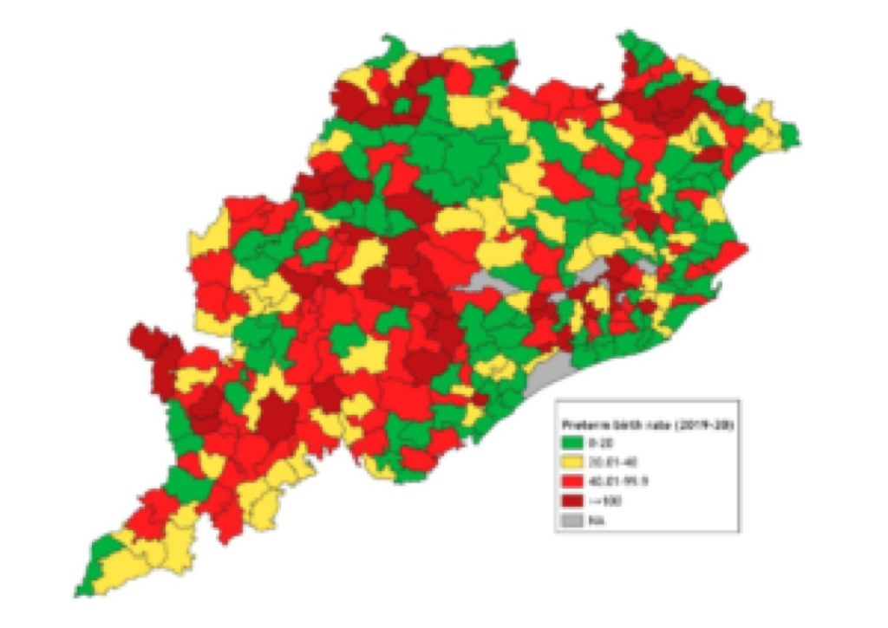<figcaption><br><strong>Fig 3. Preterm birth rates (per 1000 live births) across blocks of Odisha, FY20</strong></figcaption></figure></div>


<p class="has-small-font-size">Source: HMIS</p>


<p><strong>Reducing &amp; Managing Preterm Births: Key Action Points</strong></p>


<p>Odisha is a state with high preterm birth incidence where few districts and blocks have reported preterm birth rates that exceed 100 per 1000 live births. The identification of such districts and blocks with the highest incidence in the state can aid local administrators in the micro-planning of health and nutrition interventions in these areas.</p>


<p>Health system strengthening is fundamentally crucial in regions with high preterm birth rates. This includes ensuring the availability of quality healthcare facilities and trained personnel as per caseload and existing norms. Medical officers and ANMs also need to be given adequate training for the appropriate administration of antenatal corticosteroids as per guidelines.<sup>6</sup> Further, the Public Health Department should additionally conduct refresher training so that frontline healthcare workers like ASHAs are adequately able to identify high-risk mothers and assess signs of preterm labor.</p>


<p>In the Indian context, maternal anemia, pregnancy-induced hypertension, prior history of preterm labor, low maternal height, and low birth spacing have been recognized as risk factors for preterm births.<sup>7-9</sup> Obstetric factors, such as minimal antenatal care, delivery complications, history of previous cesarean delivery, and delivery at private health facilities are also associated with an increased risk of PTB.<sup>7 </sup>Hence, antenatal and delivery care play a critical role in the prevention and management of preterm births.<sup>9</sup></p>


<p>Ensuring more pregnant women receive their routine antenatal care (ANC) visits and investigations including ultrasonography promptly is important.<sup> </sup>To ensure that pregnant women report early to health facilities, ANM/ASHAs must provide counselling to pregnant women and their families about the first signs of preterm labor, symptoms of pregnancy complications, birth preparedness, and the need to opt for institutional delivery. Timely referral of women in preterm labor as per guidelines to nearest facilities that provide caesarean section, special care newborn units, and preferably also Kangaroo Mother Care units is vital.<sup>6,10</sup></p>


<p>Post-discharge, periodic home visits by ASHAs to monitor health and support breastfeeding of preterm newborns as per the Home Based New Born Care schedule would be critical to preventing adverse outcomes related to preterm births.<sup>11</sup></p>


<p><strong>References</strong></p>


<ol class="wp-block-list"><li>Goldenberg, R. L., Culhane, J. F., Iams, J. D., &amp; Romero, R. (2008). Epidemiology and causes of preterm birth. <em>The lancet</em>, 371(9606), 75-84.</li><li> UNICEF. (2019). Levels &amp; trends in child mortality- Report 2019: Estimates/developed by the UN Inter-Agency Group for Child Mortality Estimation.</li><li>Santos, I. S., Matijasevich, A., Domingues, M. R., Barros, A. J., Victora, C. G., &amp; Barros, F. C. (2009). Late preterm birth is a risk factor for growth faltering in early childhood: a cohort study. <em>BMC Pediatrics</em>, 9, 1-8.</li><li>World Bank. (n.d.). Sustainable Development Goals and Targets.</li><li>Government of India. (2011). Odisha district wise map-ST percentage. Retrieved from: https://www.censusgis.org/india/</li><li>MoHFW. (2014). Use of Antenatal Corticosteroids in Preterm Labour. Operational Guidelines. National Health Mission. Ministry of Health and Family Welfare.</li><li>Jana, A., Banerjee, K., &amp; Khan, P. K. (2022). Early arrivals: association of maternal obstetric factors with preterm births and their survival in India.&nbsp;Public Health,&nbsp;211, 37-46.</li><li>Kumari, S., Garg, N., Kumar, A., Guru, P. K. I., Ansari, S., Anwar, S., &#8230; &amp; Sohail, M. (2019). Maternal and severe anaemia in delivering women is associated with risk of preterm and low birth weight: A cross sectional study from Jharkhand, India. One Health, 8, 100098.</li><li>Sureshbabu, R. P., Aramthottil, P., Anil, N., Sumathy, S., Varughese, S. A., Sreedevi, A., &amp; Sukumaran, S. V. (2021). Risk factors associated with preterm delivery in singleton pregnancy in a tertiary care hospital in south India: a case control study. International Journal of Women&#8217;s Health, 369-377.</li><li>MoHFW. (2011). Guidelines for Janani Shishu Suraksha Karyakram. Ministry of Health and Family Welfare.</li><li>MoHFW. (2014). Home-Based Newborn Care. National Health Mission. Ministry of Health and Family Welfare.</li></ol>


<p>We acknowledge the support of the National Health Mission, CTARA-IIT Bombay, and the GISE Hub, IIT Bombay.</p>


<p><strong>Authors</strong></p>


<p>Marian Abraham, Prof. Sarthak Gaurav</p>


<p>Marian Abraham is a Senior Research Analyst at the Koita Centre For Digital Health, IIT Bombay.</p>


<p>Prof. Sarthak Gaurav is an Associate Professor at Shailesh J. Mehta School of Management, IIT Bombay.</p>


<div style="height:30px" aria-hidden="true" class="wp-block-spacer"></div>


<p><em><strong>Suggested citation:</strong> Abraham, M., &amp; Gaurav., S. (2024). Incidence of preterm births in Odisha : Identifying regions for targeted intervention. Nutrition Group, IIT Bombay.</em></p>
]]></content:encoded>
					
					<wfw:commentRss>../policy-brief-incidence-of-preterm-births-in-odisha-identifying-regions-for-targeted-intervention/feed/</wfw:commentRss>
			<slash:comments>0</slash:comments>
		
		
		<post-id xmlns="com-wordpress:feed-additions:1">1946</post-id>	</item>
		<item>
		<title>PB No. 12  Implementation of home-based new-born care guidelines in Maharashtra: A review</title>
		<link>../policy-brief-implementation-of-home-based-new-born-care-guidelines-in-maharashtra-a-review/</link>
					<comments>../policy-brief-implementation-of-home-based-new-born-care-guidelines-in-maharashtra-a-review/#respond</comments>
		
		<dc:creator><![CDATA[Nutrition Group]]></dc:creator>
		<pubDate>Mon, 26 Feb 2024 05:27:35 +0000</pubDate>
				<category><![CDATA[Policy Briefs]]></category>
		<category><![CDATA[HBNC]]></category>
		<category><![CDATA[HMIS]]></category>
		<category><![CDATA[hmisanalyzer]]></category>
		<category><![CDATA[Maharashtra]]></category>
		<category><![CDATA[policy]]></category>
		<guid isPermaLink="false">../?p=1928</guid>

					<description><![CDATA[This policy brief evaluates home-based newborn care (HBNC) implementation in Maharashtra, highlighting significant gaps in HBNC coverage for home and institutional deliveries. Targeted interventions, including capacity building for frontline workers, enhanced incentives, and improved supervision, are recommended to ensure effective HBNC delivery.]]></description>
										<content:encoded><![CDATA[
<p>The first year of life is a period of high vulnerability during childhood. However, even with the first year of life, the first month of life carries a high risk of mortality and contributes significantly to both infant and child mortality.<sup>1</sup> Hence, attaining or maintaining targets towards the Sustainable Development Goal (SDG)-3 requires comprehensive action during the neonatal period. In India, a significant number of neonatal deaths especially in rural regions, occur at home.<sup>2</sup> Efforts to improve child survival hence emphasize a “continuum of care” approach and include community outreach to ensure that critical services are made available at home.<sup>3 </sup>Home-based newborn care (HBNC) delivered since 2011 by community health workers is an essential component of this package and has proven to effectively reduce neonatal and infant mortality rates in India.<sup>4-5</sup> As per government mandate, Accredited Social Health Activist (ASHA) would have to ensure that the newborn is safe up to 42 days of life which will includes identifying illnesses, monitoring weight, supporting exclusive breastfeeding, promoting safe and hygienic care practices, etc. For this purpose, ASHAs are given incentives to conduct six home visits in case of institutional delivery and seven visits in case of home delivery till 42 days of delivery.<sup>3</sup></p>


<p>Maharashtra is one of the six states in the country that has already met the SDG target of reducing neonatal mortality rates to 12 or below by 2030.<sup>6</sup> In 2020, Maharashtra reported a neonatal mortality rate (NMR) of 11 per 1000 live births and an infant mortality rate (IMR) of 16 per 1000 live births which is considerably lower than country-level figures at 20 and 28, respectively.<sup>7 </sup>However, the state also reports a high prevalence of infants born with a low birth weight and has moderate incidence of preterm births, two critical factors that contribute to neonatal mortality in India.<sup>5,8</sup> Ensuring that all children born receive adequate home-based newborn care is critical to maintaining low neonatal mortality rates in the state. In this context, the current policy brief uses the Health Management Information System (HMIS) data to examine Maharashtra’s adherence to the Ministry of Home Based New Born Care guidelines.</p>


<p><strong>Implementation for home or institutional births better?</strong></p>


<p>Home-based newborn care (HBNC) is a strategy adopted by the Government to reduce the burden of newborn deaths in the first few weeks of life.<sup>3</sup> Frontline workers like ASHAs have to ensure newborn survival by making six periodic visits to the homes of newborns delivered in the institution and seven visits to those delivered at home. Maharashtra has a low neonatal mortality incidence (711 per 100,000 LB in 2019-20), but programs like HBNC can ensure that the state maintains a low neonatal mortality incidence or reduces the incidence further.</p>


<div class="wp-block-image">
<figure class="aligncenter size-full"><figcaption><strong>Table 1.</strong> Coverage of HBNC home visits for home and institutional deliveries</figcaption></figure></div>


<p class="has-small-font-size">Source: HMIS</p>


<p class="has-small-font-size">Note: Figures for Mumbai and Mumbai Suburban not reported separately; blanks where 0 cases of home delivery reported.</p>


<p>Majority of births occurring in Maharashtra are institutional births. According to HMIS data, part from two districts (Nandurbar and Gadchiroli), rest of Maharashtra had universalized institutional delivery and reported negligible incidence of home deliveries (&lt;5%) between FY-18 and FY-20. Most babies born at home in these two predominantly tribal districts had received 7 home visits as per the scheme guidelines during this period. The coverage of the mandated HBNC visits for home deliveries was noticeably higher than that for institutional deliveries. Between 2017-18 and 2019-20, the data indicates a consistent lack of adherence to the scheme&#8217;s requirement of six HBNC home visits for institutional deliveries across all districts (See Table 1). This implies that the majority of newborns in the state are not receiving sufficient home-based newborn care as per the guidelines of the scheme. Throughout the three-year period, Thane, Beed, and Nagpur consistently reported the lowest adherence to the requirement of six Home-Based Newborn Care (HBNC) visits for institutional deliveries.</p>


<div class="wp-block-image">
<figure class="aligncenter size-full is-resized"><figcaption><strong>Fig 1.</strong> Coverage of HBNC home visits for home deliveries &#8211; FY20</figcaption></figure></div>


<p>In 2019-20, except Satara, most of Maharashtra had very poor coverage. However, seven of the ten bottom performing districts with the lowest figures of home HBNC visits for institutional deliveries had a significant urban population (&gt;30%).<sup>9</sup> This is not surprising since the programme was initially introduced in 2011 with a goal to reduce neonatal mortality in rural areas.<sup>3</sup></p>


<div class="wp-block-image">
<figure class="aligncenter size-full is-resized"><figcaption><br><strong>Fig 2.</strong> Coverage of HBNC home visits for institutional deliveries -FY20</figcaption></figure></div>


<p>Coverage patterns of HBNC for home deliveries varied throughout the state. In 2019-20, most districts with high coverage (&gt;70% coverage) were located in the northern and north-eastern parts of the state. A notable cluster of high-coverage districts was also found in central Maharashtra (Figure 1). Given the low to negligible prevalence of home deliveries in most districts, attaining complete coverage of home deliveries in all districts is a low hanging fruit. In the case of institutional deliveries, nearly all of Maharashtra appears to be in the red (Figure 2).</p>


<div class="wp-block-image">
<figure class="aligncenter size-large is-resized"><figcaption><br><strong>Fig 3.</strong> Neonatal deaths in Maharashtra -FY20</figcaption></figure></div>


<p>While Maharashtra reported a low rate of neonatal mortality in 2019-20, two districts (Akola &amp; Chandrapur) reported neonatal deaths more than 2000 per 100,000 live births and seven (Gondia, Gadchiroli, Sangli, Nandurbar, Dhule, Nagpur &amp; Aurangabad) reported deaths between 1000-2000 per 100,000 livebirths (Figure 3). It is crucial to implement measures to enhance Home-Based Newborn Care adequately for institutional births in these nine districts.</p>


<p><strong>Policy Implications &amp; Recommendations</strong></p>


<p>Maintaining a “continuum of care” is very crucial for ensuring child health and well-being. Central to this tenet, the Home-Based Newborn Care scheme for newborns aims to deliver cost-effective interventions to vulnerable populations at the community level. The current policy brief identifies regions for targeted action which can aid the efficient distribution of resources and effectively address persistent issues related to maternal and child health in those regions. According to HMIS data, there are 9 districts in Maharashtra that reported a moderate or high prevalence of neonatal deaths in 2019-20. However, among these districts, Akola, Chandrapur, Nagpur, Sangli, and Aurangabad districts need to be prioritized as less than one fifth newborns born in facilities in these districts received the mandated 6 HBNC home visits.</p>


<p>The state needs to also work towards the goal of total coverage for home deliveries in all districts. While there is need for further research to evaluate HBNC coverage levels and quality and reasons for poor performance, few actions to improve coverage can be suggested.</p>


<ol class="wp-block-list"><li>ASHAs have to deliver various interventions as per HBNC guidelines including providing immediate newborn care for all babies including preterm babies, early identification of severe illnesses and support families to adopt good health practices like exclusive breastfeeding.<sup>3 </sup>Hence capacity building to deliver these services is essential. District Health Training Centres under the Public Health Department need to periodically sensitize ASHA workers, ASHA facilitators and ANMs about the programme and provide refresher training for ASHAs.</li><li>The Home-based New-born care guidelines revised in 2014 stipulate that ASHAs should receive Rs. 250 per neonate for 6 visits in case of institutional deliveries and 7 in the case of home deliveries but there has been no revision in the past decade.<sup>3,10</sup> Periodic enhancement of incentives could aid the delivery of HBNC services by ASHAs. ASHA Facilitators should ensure that ASHAs get their incentives from the primary health centre in a timely manner.</li><li>ASHA facilitators should provide necessary supervision to ensure delivery of HBNC including guidance on family counselling, use of equipment, completion of HBNC home visit forms, etc. They could also conduct few joint visits with ASHA worker to the newborn’s home per month. ASHA facilitators or Auxilary Nurse Midwives should ensure that all ASHAs have received the equipment, consumables, and drugs to deliver HBNC from Primary Health Centres. The progress of HBNC and any related grievances by ASHAs should be discussed periodically in meetings.</li></ol>


<p><strong>References</strong></p>


<ol class="wp-block-list"><li>WHO. (2022). Newborn Mortality Factsheet. Retrieved from: <a href="https://www.who.int/news-room/fact-sheets/detail/levels-and-trends-in-child-mortality-report-2021">https://www.who.int/news-room/fact-sheets/detail/levels-and-trends-in-child-mortality-report-2021</a></li><li>Bang, A. T., Bang, R. A., Baitule, S. B., Reddy, M. H., &amp; Deshmukh, M. D. (1999). Effect of home-based neonatal care and management of sepsis on neonatal mortality: field trial in rural India. The lancet, 354(9194), 1955-1961.</li><li>MoHFW. (2014). Home Based Newborn Care Operational Guidelines. Revised 2014. National Health Mission.</li><li>Rasaily, R., Saxena, N. C., Pandey, S., Garg, B. S., Swain, S., Iyengar, S. D., &#8230; &amp; Bang, A. T. (2020). Effect of home-based newborn care on neonatal and infant mortality: a cluster randomised trial in India. BMJ global health, 5(9), e000680.</li><li>MoHFW. (n.d.) Child Health. Retrieved from: <a href="https://nhm.gov.in/index1.php?lang=1&amp;level=2&amp;sublinkid=819&amp;lid=219">https://nhm.gov.in/index1.php?lang=1&amp;level=2&amp;sublinkid=819&amp;lid=219</a></li><li>MoHFW. (2022). India achieves significant landmarks in reduction of Child Mortality. Retrieved from: <a href="https://pib.gov.in/PressReleasePage.aspx?PRID=1861710#:~:text=Neonatal%20Mortality%20Rate%20has%20also,to%2023%20in%20rural%20areas">https://pib.gov.in/PressReleasePage.aspx?PRID=1861710#:~:text=Neonatal%20Mortality%20Rate%20has%20also,to%2023%20in%20rural%20areas</a></li><li>Office of the Registrar General &amp; Census Commissioner. (2022). Sample Registration System Statistical Report 2020. Census Digital Library.</li><li>Jana, A. (2023). Correlates of low birth weight and preterm birth in India. PLoS One, 18(8), e0287919.</li><li>Government of India. (2011). Maharashtra district wise map-urban population percentage. Census 2011. Retrieved from <a href="https://www.censusgis.org/india/">https://www.censusgis.org/india/</a></li><li>NHM (n.d.). ASHA incentives – FY 2020-21. National Health Mission. Retrieved from: <a href="https://nhm.punjab.gov.in/advertisements/ASHA_Prog/Community%20Processes.pdf">https://nhm.punjab.gov.in/advertisements/ASHA_Prog/Community%20Processes.pdf</a></li></ol>


<p>We acknowledge the support of the National Health Mission, CTARA-IIT Bombay, and the GISE Hub, IIT Bombay.</p>


<p><strong>Authors</strong></p>


<p>Marian Abraham, Prof. Sarthak Gaurav</p>


<p>Marian Abraham is a Senior Research Analyst at the Koita Centre For Digital Health, IIT Bombay.</p>


<p>Prof. Sarthak Gaurav is an Associate Professor at Shailesh J. Mehta School of Management, IIT Bombay.</p>


<div style="height:30px" aria-hidden="true" class="wp-block-spacer"></div>


<p><em><strong>Suggested citation:</strong> Abraham, M., &amp; Gaurav., S. (2024). Implementation of home-based new-born care guidelines in Maharashtra: A review. Nutrition Group, IIT Bombay.</em></p>
]]></content:encoded>
					
					<wfw:commentRss>../policy-brief-implementation-of-home-based-new-born-care-guidelines-in-maharashtra-a-review/feed/</wfw:commentRss>
			<slash:comments>0</slash:comments>
		
		
		<post-id xmlns="com-wordpress:feed-additions:1">1928</post-id>	</item>
		<item>
		<title>PB No. 11 Status of implementation of deworming during pregnancy in Kerala</title>
		<link>../policy-brief-status-of-implementation-of-deworming-during-pregnancy-in-kerala/</link>
					<comments>../policy-brief-status-of-implementation-of-deworming-during-pregnancy-in-kerala/#respond</comments>
		
		<dc:creator><![CDATA[Nutrition Group]]></dc:creator>
		<pubDate>Sun, 25 Feb 2024 07:17:09 +0000</pubDate>
				<category><![CDATA[Policy Briefs]]></category>
		<category><![CDATA[Albendazole]]></category>
		<category><![CDATA[deworming]]></category>
		<category><![CDATA[HMIS]]></category>
		<category><![CDATA[Kerela]]></category>
		<category><![CDATA[policy]]></category>
		<guid isPermaLink="false">../?p=1901</guid>

					<description><![CDATA[
This policy brief evaluates the implementation status of deworming during pregnancy in Kerala, focusing on albendazole administration post the 1st trimester. Soil-transmitted helminth (STH) infections pose significant risks to pregnant women, leading to complications like anemia and low birth weight. ]]></description>
										<content:encoded><![CDATA[
<p>Soil-transmitted helminth (STH) infections are an important cause of the burden of morbidity globally, affecting an estimated 1.5 billion people worldwide, the majority of which are women of reproductive age (WRA) including pregnant women<sup>1</sup>. STH infections result in severe blood loss and malabsorption of nutrients<sup>2</sup>. Pregnant women with intestinal worm infections are at an increased risk of maternal complications and adverse outcomes such as anemia, low birth weight, and perinatal mortality<sup>1</sup>. Deworming is one of the primary preventive approaches to deal with STH globally and its use does not result in adverse birth outcomes<sup>2 </sup>instead, studies have observed that antenatal deworming reduces the risk of maternal anemia, childhood anemia and stunting, low birth weight, and neonatal mortality<sup>3-4</sup>.</p>


<p>Ease of single dose administration, high efficacy, absence of serious maternal or fetal side effects, and low cost make albendazole the ideal deworming agent for pregnant women. In recognition of the efficacy and importance of preventive deworming therapy, the WHO recommends administering deworming through anthelminthic drugs like albendazole in pregnant women post the 1st trimester<sup>5</sup>. In accordance with WHO, the national guidelines on antenatal deworming prescribe a single dose of 400 mg of albendazole after 1<sup>st</sup> trimester, also recognizing that iron and folic acid tablets are alone inadequate to reduce maternal anemia.<sup>6</sup></p>


<p>Kerala is among the states that has a high prevalence of soil-transmitted helminth infections in India, though specific prevalence estimates for pregnant women are lacking.<sup>7 </sup>This makes the implementation of deworming interventions critical. The Health Management Information System (HMIS) is the only source that monitors critical health indicators below the state level on a monthly basis. In the current policy brief, HMIS data is used to review the coverage of deworming during pregnancy (single dose of Albendazole tablet post 1<sup>st</sup> trimester). The policy brief examines data from the financial years prior to the onset of the pandemic i.e. FY 2017-18 to 2020-21. The aim of this policy brief is to facilitate understanding of coverage of an important intervention like antenatal deworming and promote its uptake.</p>


<p><strong>Is there adequate coverage of Albendazole in Kerala?</strong></p>


<p>According to the national protocol, albendazole is the recommended drug for deworming during pregnancy. The mandate requires a single dose of albendazole to be done after the 1st trimester of pregnancy<sup>6</sup>. However as per HMIS data, Kerala has not adhered to this mandate, with the state reporting the lowest coverage in the country well below the national level (Figure 1). Kerala is the only Southern Indian state with low coverage (i.e. &lt;50% coverage) of deworming among pregnant women.</p>


<div class="wp-block-image">
<figure class="aligncenter size-full is-resized"><figcaption><strong>Fig 1.&nbsp;</strong>Coverage of deworming during pregnancy -state wise performance in FY21</figcaption></figure></div>


<p class="has-small-font-size">Source: HMIS</p>


<p>In the past 4 years, there has been little progress in improving deworming coverage for pregnant women in the state. In 2017-18, only 3.6% of pregnant women with 4 or more ANC visits were given 1 albendazole tablet after the 1<sup>st</sup> trimester and this marginally increased to 5.3% in 2020-21. It is evident that the state must meet the critical gap in deworming coverage to ensure maternal well-being and prevent adverse pregnancy outcomes.</p>


<p>Government guidelines mandate universal administration of one tablet of albendazole to pregnant women post the first trimester in STH endemic regions which have more than 20% prevalence.<sup>6</sup> While recent prevalence estimates remain unavailable, a study carried out by Global Atlas for Helminth Infections shows Kerala to be among the states with high STH prevalence (20-49.9%).<sup>7</sup> Given the high prevalence of STH in the state, the low priority given to antenatal deworming is troubling.</p>


<div class="wp-block-image">
<figure class="aligncenter size-full"><figcaption><strong>Fig 2.&nbsp;</strong>Coverage of key ANC services between FY18-FY21</figcaption></figure></div>


<p class="has-small-font-size">Source: HMIS</p>


<p>However, the guidelines that mandate deworming through albendazole tablets and calcium tablets were introduced in the same year i.e. 2014<sup>9</sup>. However, the coverage of supplementation of 360 Calcium tablets has improved at a much faster pace than that of albendazole (Figure 2). The IFA and Calcium coverage above 100% in the year 2020-21, means that even the pregnant woman who has less than four ANC visits, have received 180 IFA tablets and 360 Calcium tablets. It is critical that the state government prioritizes provision of antenatal deworming in line with other ANC services.</p>


<div class="wp-block-image">
<figure class="aligncenter size-full is-resized"><figcaption><strong>Fig 3.&nbsp;</strong>District wise-coverage of albendazole tablet during pregnancy in FY 21<br></figcaption></figure></div>


<p>Antenatal deworming is emphasised as an approach to address the problem of maternal anaemia.<sup>6, 10</sup> Yet the districts with the highest rates of anemia among women of reproductive age, which includes pregnant women, also reported the lowest deworming during pregnancy (Figure 4).</p>


<div class="wp-block-image">
<figure class="aligncenter size-full is-resized"><figcaption><strong>Fig 4.</strong>&nbsp;Anaemia among women in reproductive age across Kerala</figcaption></figure></div>


<p class="has-small-font-size">Source: NFHS 5</p>


<p>Kerala would have to prioritize action in the cluster of districts with the lowest coverage largely located in central and northern parts of the state―Wayanad, Kozhikode, Malappuram, Palakkad and Thrissur. Wayanad, Kozhikode and Malappuram are also the three districts that have consistently reported the lowest coverage between 2017-18 and 2020-21 (Table 1).</p>


<div class="wp-block-image">
<figure class="aligncenter size-full"><figcaption><br><strong>Table 1.</strong> District wise status of deworming during pregnancy in Kerala as per HMIS 2017-18 to 2020-21.</figcaption></figure></div>


<p>Coverage of antenatal deworming did not vary significantly throughout the state (Figure 3). In 2020-21, all districts reported poor coverage of deworming (&lt;40%), and the three districts in the northern and southern parts of the state with the highest coverage were also in the red (15.6-20% coverage).</p>


<p><strong>Key Takeaways &amp; Policy Implications</strong></p>


<p>Coverage of antenatal deworming i.e. single dose of albendazole tablet post the first trimester in Kerala is the lowest in the country. Despite the ease to deliver a single dose of Albendazole tablet preferably during the 2<sup>nd</sup> trimester, the coverage of this intervention is much lower than other ANC services like the distribution of iron and folic acid tablets for a minimum of 180 days from the 2<sup>nd</sup> trimester and distribution of 360 calcium tablets during the 14<sup>th</sup> to 40<sup>th</sup> week of pregnancy. In a state like Kerala that performs well on most health parameters, the reports of the abysmally low coverage of deworming during pregnancy (&lt;15%) is alarming. There is a clear need to improve public awareness of the importance of antenatal deworming to ensure maternal well-being including prevention of anemia. Given the indication of high prevalence of STH infections in the state, identification of STH endemic districts is critical for adequate implementation of national guidelines.</p>


<p><strong>Policy Recommendations</strong></p>


<p>The gap between deworming and other ANC services like IFA distribution indicates that frontline healthcare workers may not perceive its importance. As per guidelines, ANMs and medical officers need to be trained to ensure knowledge of deworming drugs and their administration during the ANC period. ASHAs also need to receive an orientation on the program to support monitoring and counselling for this service.<sup>6</sup> Refresher training should also be periodically by the Public Health Department to reiterate the importance of deworming during pregnancy.</p>


<p>Healthcare workers need to increase awareness about the importance of deworming among pregnant women and families during home visits and ANC visits. ASHAs should be given adequate IEC material and job aids for this purpose. At a larger scale, the Public Health Department as part of its Anaemia Mukht Bharat strategy could also periodically initiate efforts for behaviour change communication year-round to ensure compliance to antenatal deworming.</p>


<p>Currently, the incentive structure of ASHAs, the frontline workers that operate at the community level does not appear to support monitoring the consumption of deworming by pregnant women, unlike IFA consumption<sup>11</sup>. An incentive for ASHAs to monitor deworming consumption during the ANC period could aid its better uptake.</p>


<p><strong>References</strong></p>


<ol class="wp-block-list"><li>Zegeye, B., Keetile, M., Ahinkorah, B. O., Ameyaw, E. K., Seidu, A. A., &amp; Yaya, S. (2021). Utilization of deworming medication and its associated factors among pregnant married women in 26 sub-Saharan African countries: a multi-country analysis. Tropical Medicine and Health, 49(1), 1-15.</li><li> Gyorkos, T. W., &amp; St-Denis, K. (2019). Systematic review of exposure to albendazole or mebendazole during pregnancy and effects on maternal and child outcomes, with particular reference to exposure in the first trimester. International journal for parasitology, 49(7), 541-554.</li><li>Walia, B., Kmush, B. L., Lane, S. D., Endy, T., Montresor, A., &amp; Larsen, D. A. (2021). Routine deworming during antenatal care decreases risk of neonatal mortality and low birthweight: a retrospective cohort of survey data. PLoS neglected tropical diseases, 15(4), e0009282.</li><li>Traore, S. S., Bo, Y., Kou, G., &amp; Lyu, Q. (2023). Iron supplementation and deworming during pregnancy reduces the risk of anemia and stunting in infants less than 2 years of age: a study from Sub-Saharan Africa. BMC Pregnancy and Childbirth, 23(1), 63.</li><li>World Health Organization. (2017). Guideline: preventive chemotherapy to control soil-transmitted helminth infections in at-risk population groups. World Health Organization.</li><li>MoHFW. (2014). National Guidelines for Deworming in Pregnancy. Ministry of Health &amp; Family Welfare (MoHFW). Government of India.&nbsp;</li><li>GAHI. (n.d.) Distribution of soil transmitted helminth survey data in India. Retrieved from : https://www.thiswormyworld.org/maps/distribution-of-soil-transmitted-helminth-survey-data-in-india&nbsp;</li><li>MoHFW. (2010). Guidelines for Antenatal Care and Skilled Attendance at Birth by ANMs/LHVs/SNs. Ministry of Health &amp; Family Welfare (MoHFW). Government of India.&nbsp;</li><li>MoHFW. (2014). National Guidelines for Calcium Supplementation During Pregnancy and Lactation. Maternal Health Division. Ministry of Health &amp; Family Welfare (MoHFW). Government of India.&nbsp;</li><li>NHM. (n.d.)&nbsp; Anaemia Mukt Bharat 6 interventions. National Health Mission. Retrieved from: https://anemiamuktbharat.info/interventions/&nbsp;</li><li>NHM (n.d.). ASHA incentives – FY 2020-21. National Health Mission.</li></ol>


<p><strong>Authors</strong></p>


<p>Marian Abraham, Prof. Sarthak Gaurav</p>


<p>Marian Abraham is a Senior Research Analyst at the Koita Centre For Digital Health, IIT Bombay.</p>


<p>Prof. Sarthak Gaurav is an Associate Professor at Shailesh J. Mehta School of Management, IIT Bombay.</p>


<div style="height:30px" aria-hidden="true" class="wp-block-spacer"></div>


<p><em><strong>Suggested citation:</strong> Abraham, M., &amp; Gaurav., S. (2024). Status of implementation of deworming during pregnancy in Kerala. Nutrition Group, IIT Bombay.</em></p>
]]></content:encoded>
					
					<wfw:commentRss>../policy-brief-status-of-implementation-of-deworming-during-pregnancy-in-kerala/feed/</wfw:commentRss>
			<slash:comments>0</slash:comments>
		
		
		<post-id xmlns="com-wordpress:feed-additions:1">1901</post-id>	</item>
	</channel>
</rss>
